![Logo ONIX 360]()
Sommaire
Comment lire ce manuel
Ce manuel accompagne ONIX 360 de la première installation jusqu'au travail de tous les jours. Il est écrit pour des personnes qui ne sont pas informaticiennes : chaque tâche est expliquée pas à pas, avec des images de l'écran prises dans le logiciel lui-même (version 0.95.0), sur une superette d'exemple.
Il se lit dans l'ordre la première fois, puis se consulte au besoin :
- Partie 1, Démarrer : installer le logiciel, créer le magasin, se repérer dans l'écran.
- Partie 2, Paramétrer : régler le magasin, créer les caisses, les utilisateurs, les articles et reprendre le stock de départ. On le fait une fois, au début.
- Partie 3, Au quotidien : vendre, encaisser, clôturer la caisse, gérer les clients, les achats, le stock, les dépenses, le personnel et suivre l'activité.
- Partie 4, Entretenir : sauvegardes, licence, mises à jour, plusieurs PC, et les réponses aux questions fréquentes.
Les conventions
| Écrit comme ceci | Veut dire |
|---|---|
| Vente › Vente à crédit | Cliquez sur le menu Vente dans la barre verte à gauche, puis sur Vente à crédit dans la liste qui s'ouvre. |
| Enregistrer | Un bouton de l'écran, à cliquer. |
| F4 Ctrl+E | Une touche du clavier ; « Ctrl+E » : gardez Ctrl enfoncée et appuyez sur E. |
| Gras dans une étape | Le nom exact d'une case, d'un onglet ou d'un message à l'écran. |
Un conseil qui fait gagner du temps.
Un point à vérifier pour éviter une erreur.
Une règle à ne jamais oublier (argent, données, licence).
Qui lit quoi
| Vous êtes | Lisez en priorité |
|---|---|
| Propriétaire (administrateur) | Tout le manuel, surtout les parties 1, 2 et 4. |
| Gérant | Chapitres 3, 5, 6, puis toute la partie 3 et les chapitres 18 et 21. |
| Caissier ou vendeur | Chapitre 3 (se repérer), chapitres 8, 9 et 10 (vendre, encaisser, clôturer), et le chapitre 11 pour les ventes à crédit. |
| Magasinier, acheteur, comptable | Chapitre 3, puis respectivement les chapitres 13, 12 ou 17. |
Sur chaque écran, le bouton rond ? en haut à droite (ou la touche F1) explique la page affichée, avec les mêmes mots que ce manuel. Voir le chapitre 3.
Démarrer
Installer ONIX 360, créer votre magasin et apprendre à vous déplacer dans l'écran.
Bienvenue dans ONIX 360
ONIX 360 est le logiciel de gestion de votre commerce : la caisse, le stock, les clients, les fournisseurs, les dépenses, le personnel et la comptabilité au plan SYSCOHADA, en FCFA. Il a été conçu pour les superettes, boutiques, quincailleries, pharmacies et boulangeries du Cameroun.
Ce que fait le logiciel
| Domaine | Ce que vous y faites |
|---|---|
| Vente | Encaisser au comptant ou à crédit, en espèces, MTN Mobile Money, Orange Money, carte ou chèque ; devis, commandes clients, livraisons. |
| Trésorerie | Ouvrir et clôturer la caisse chaque jour, compter le tiroir, suivre les écarts, la caisse centrale et les comptes Mobile Money. |
| Stock et articles | Fiches produits avec cartons et pièces, codes-barres, étiquettes, réceptions, pertes, transferts entre dépôts, inventaires, péremptions. |
| Achats et fournisseurs | Propositions et bons de commande, réceptions, factures fournisseurs, échéancier, retours. |
| Clients | Comptes clients, plafonds de crédit, règlements, relevés, relances WhatsApp, fidélité. |
| Dépenses et personnel | Loyer, ENEO, transport… ; fiches du personnel, pointage, salaires, congés. |
| Suivi et comptabilité | Tableau de bord, rapports de ventes, résumé du jour ; journaux, grand livre, balance, TVA, bilan et DSF passés tout seuls. |
Comment le logiciel est organisé
Quelques mots reviennent partout dans ce manuel :
- Magasin (ou boutique) : votre point de vente, avec un code court comme
DLA1. Une entreprise peut avoir plusieurs magasins. - Dépôt : un endroit où l'on garde la marchandise. Au départ : Surface de vente (le rayon) et Réserve (le magasin arrière).
- Caisse : là où va l'argent. Une caisse Espèces par poste (le tiroir), et si vous voulez une caisse Électronique (MoMo, OM, carte) et une caisse Banque (virement, chèque). La caisse centrale est le coffre du bureau où l'on verse la recette.
- Journée de caisse : elle commence à l'ouverture de la caisse le matin et finit à la clôture le soir. Elle donne le rapport Z.
- Poste (ou PC) : un ordinateur où ONIX 360 est installé. Chaque poste garde ses données et continue de vendre sans Internet.
- Serveur central : quand il y a plusieurs PC ou plusieurs magasins, il les relie entre eux (chapitre 20).
Les rôles
Chaque personne a son propre compte avec un identifiant et un code secret. Son rôle décide de ce qu'elle voit : un caissier ne voit pas la comptabilité, un magasinier ne voit pas la caisse.
| Rôle | Ce qu'il fait |
|---|---|
| Administrateur | Tous les droits : paramètres, caisses, utilisateurs, licence, sauvegardes. À réserver au propriétaire. |
| Gérant | Suit la journée, contrôle les clôtures, justifie les écarts, gère le stock, les clients et les commandes. Son code autorise les remises, retours et annulations des caissiers. |
| Caissier | Ouvre sa caisse, vend, encaisse, fait les ventes à crédit et clôture sa caisse. |
| Vendeur | Facture les clients ; selon l'organisation choisie, il encaisse lui-même ou envoie la facture au caissier (chapitre 9). |
| Magasinier | Réceptions, transferts, inventaires, pertes et réassort du rayon. |
| Responsable d'achat | Fournisseurs, propositions et bons de commande, factures d'achat. |
| Comptable | Journaux, grand livre, TVA, états financiers. |
Les droits de chaque rôle se règlent en détail (chapitre 5).
Installer ONIX 360 et créer le magasin
ONIX 360 s'installe sur un PC Windows. Ses données restent sur le PC : la caisse vend même sans Internet. Le plus souvent, votre technicien FEDONG fait cette installation avec vous ; ce chapitre vous permet de la suivre ou de la refaire.
Ce qu'il faut
| Matériel | Conseil |
|---|---|
| Un PC | Windows 10 ou 11, 64 bits, 4 Go de mémoire au moins. Gardez la date et l'heure de Windows justes : une date fausse bloque la caisse. |
| Le fichier d'installation | Onix360-Setup-0.95.0.exe, remis par FEDONG (clé USB, WhatsApp ou lien de téléchargement). |
| Imprimante de tickets | Thermique 80 mm ou 58 mm, USB ou réseau. Une imprimante A4 sert aux factures, relevés et rapports. |
| Tiroir-caisse | Branché sur l'imprimante de tickets : il s'ouvre tout seul à chaque vente en espèces. |
| Douchette | Lecteur de codes-barres USB. Elle « tape » le code comme un clavier : rien à installer. |
| Clé USB | Pour la copie de sécurité des données (chapitre 18). |
| En option | Balance à étiquettes, afficheur client, lecteur d'empreintes pour le pointage, téléphones Android pour l'inventaire. |
Installer le logiciel
- Double-cliquez sur le fichier
Onix360-Setup-…exe. Si Windows demande l'autorisation de modifier l'ordinateur, cliquez sur Oui. - Lisez le contrat de licence et acceptez-le. Il reste lisible plus tard dans Réglages › Licence.
- Gardez le dossier d'installation proposé et cliquez sur Installer.
- À la fin, l'icône ONIX 360 apparaît sur le bureau. Double-cliquez dessus.
Ce message bleu apparaît parfois pour un logiciel nouveau. Cliquez sur Informations complémentaires puis Exécuter quand même, seulement si le fichier vient bien de FEDONG.
Créer le magasin (première ouverture)
À la toute première ouverture, ONIX 360 affiche Bienvenue dans ONIX 360 : on y crée le magasin et le compte de l'administrateur.
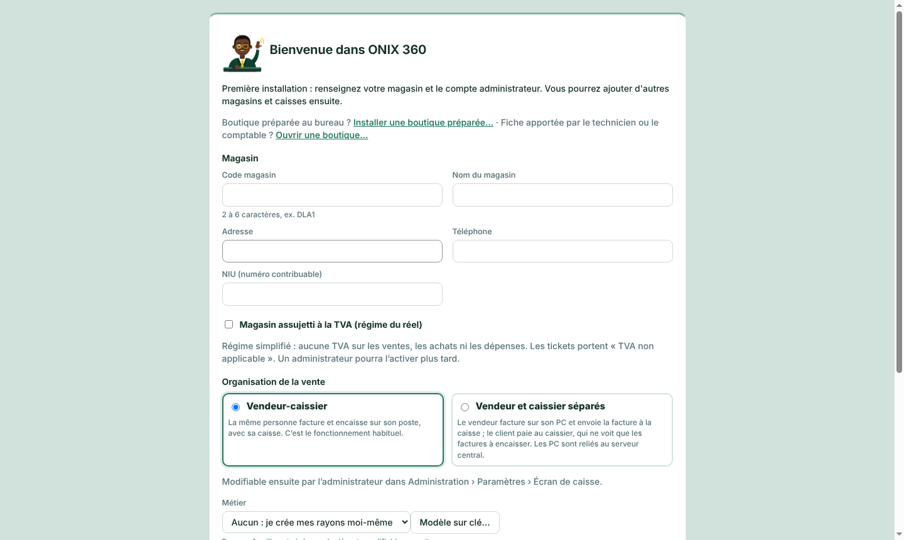
- Magasin : tapez le Code magasin (2 à 6 caractères, par exemple
DLA1) et le Nom du magasin. L'adresse, le téléphone et le NIU s'impriment sur les tickets et les factures. - Magasin assujetti à la TVA : laissez la case décochée si vous êtes au régime simplifié (les tickets portent « TVA non applicable ») ; cochez-la si vous êtes au régime du réel (TVA 19,25 %). Elle se change plus tard.
- Organisation de la vente : choisissez Vendeur-caissier si la même personne facture et encaisse (le cas habituel), ou Vendeur et caissier séparés si les vendeurs facturent sur leur PC et que le client paie à une caisse (chapitre 9).
- Métier : choisissez votre activité (Superette, Quincaillerie, Pharmacie, Boulangerie, Habillement…). ONIX 360 crée les rayons, les familles et des réglages de départ adaptés, modifiables ensuite. Choisissez Aucun pour tout créer vous-même.
- Administrateur : votre nom, un identifiant (par exemple
adminou votre prénom) et un code secret de 4 à 8 chiffres, deux fois. - Cliquez sur Créer le magasin.
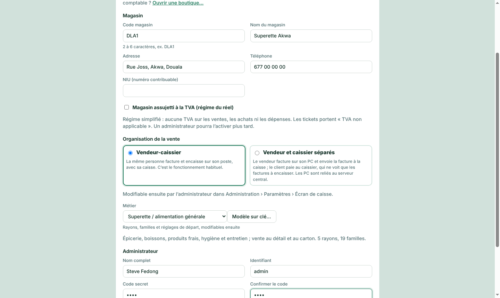
Écrivez l'identifiant et le code secret de l'administrateur et rangez-les en lieu sûr. C'est le seul compte qui peut tout faire : créer les utilisateurs, activer la licence, restaurer une sauvegarde.
Les liens du haut de l'écran servent dans des cas particuliers : Rejoindre un magasin existant pour un deuxième PC du même magasin (chapitre 20), Installer une boutique préparée quand le technicien a tout paramétré au bureau sur une clé USB, Ouvrir une boutique pour la fiche apportée par le technicien ou le comptable.
Le guide de démarrage
Juste après la création, le Guide de démarrage liste les premières choses à faire. Chaque bouton Ouvrir mène au bon écran. Elles sont expliquées dans la partie 2 de ce manuel.
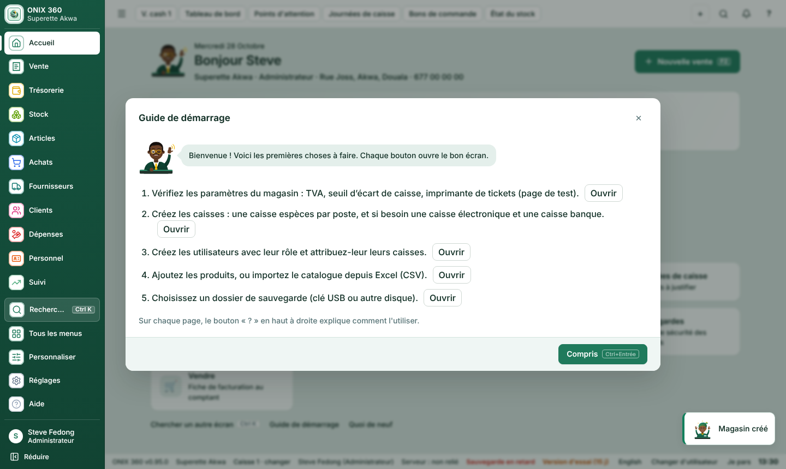
Cliquez sur Compris pour le fermer. Il se rouvre à tout moment par Aide › Guide de démarrage. Chaque rôle a son propre guide : le caissier voit comment ouvrir sa caisse et vendre, le magasinier comment recevoir et compter.
Se connecter
À chaque ouverture du logiciel, et quand on change de personne, chacun se connecte avec son identifiant et son code. Ainsi chaque vente, chaque remise et chaque clôture porte le nom de la personne qui l'a faite.
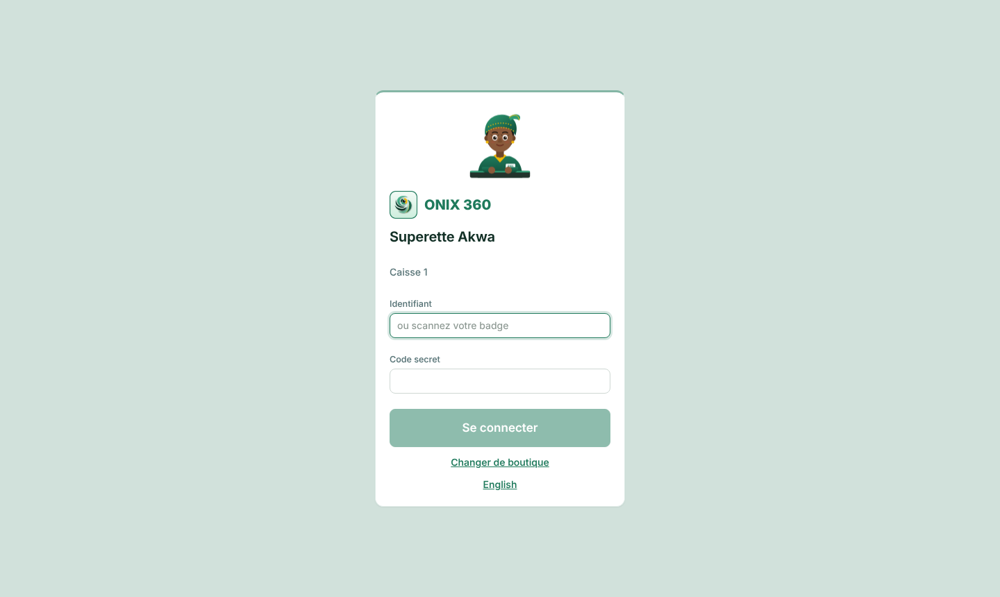
- Pour passer la main sans fermer le logiciel : Changer d'utilisateur, en bas à droite de l'écran.
- Après plusieurs codes faux, le compte est bloqué : l'administrateur le débloque (chapitre 5).
- Je pars, en bas à droite, note votre départ pour le pointage et vous déconnecte.
L'essai de 15 jours
Sans licence, ONIX 360 fonctionne 15 jours avec toutes ses fonctions. La barre du bas affiche Version d'essai (N j), le nombre de jours qui restent. Avant la fin, activez votre licence (chapitre 19). Rien n'est perdu à l'activation : les ventes et réglages de l'essai sont gardés.
Se repérer dans l'écran
L'écran d'ONIX 360 est toujours rangé de la même façon. Une fois ces quatre zones connues, on retrouve tout.
La page d'accueil
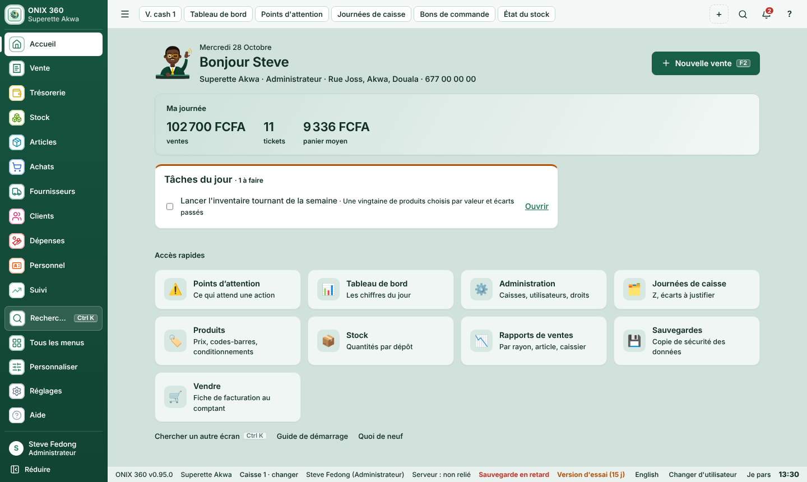
- À gauche, la barre verte : les menus (Vente, Trésorerie, Stock, Articles, Achats, Fournisseurs, Clients, Dépenses, Personnel, Suivi, Comptabilité, Fiscalité), puis Rechercher, Tous les menus, Personnaliser, Réglages et Aide. Chacun ne voit que les menus permis par son rôle.
- En haut, les onglets rapides : les écrans du jour selon le rôle (V. cash 1, Tableau de bord, Journées de caisse…). Un clic ouvre l'écran. Le + en ajoute un ; on en garde 12 au plus.
- Au centre : la page d'accueil avec Ma journée (ventes, tickets, panier moyen), les Tâches du jour et les Accès rapides en grosses tuiles. Le bouton Nouvelle vente (F2) ouvre la caisse.
- En bas, la barre d'état : version, magasin, caisse, utilisateur, état du serveur, de la sauvegarde et de la licence, langue, Changer d'utilisateur et Je pars. Un mot en rouge demande une action (par exemple Sauvegarde en retard).
La cloche, en haut à droite, compte les alertes : un clic les affiche.
Les menus
Un clic sur un menu de la barre verte ouvre sa liste d'écrans, rangés par petits titres (Encaisser, Préparer, Factures…).
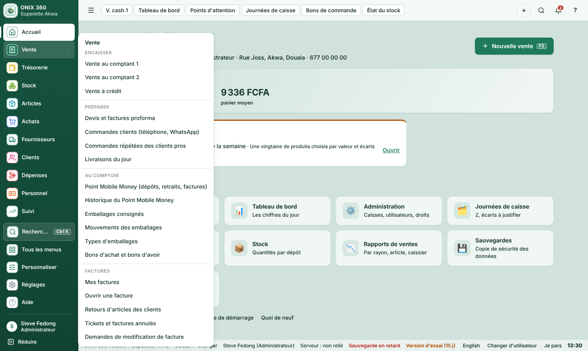
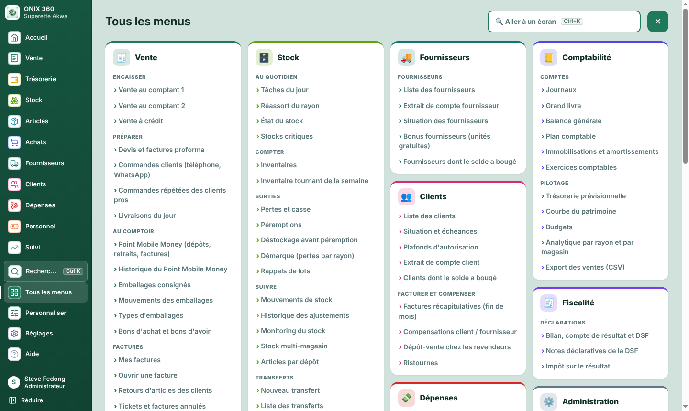
Tous les menus montre d'un coup tous les écrans permis, avec une case de recherche. Chaque écran s'ouvre dans une fenêtre : son titre rappelle le chemin (par exemple Vente › Vente au comptant 1). Les boutons à droite du titre actualisent (F5), réduisent, agrandissent ou ferment la fenêtre (Échap). Plusieurs fenêtres peuvent être ouvertes : Ctrl+Tab passe de l'une à l'autre.
Rechercher un écran (Ctrl+K)
Vous ne savez pas dans quel menu se trouve un écran ? Appuyez sur Ctrl+K (ou cliquez sur la loupe en haut) et tapez quelques lettres : « clôt » trouve la clôture de caisse, « inv » les inventaires. Les flèches choisissent, Entrée ouvre. Les accents ne comptent pas.
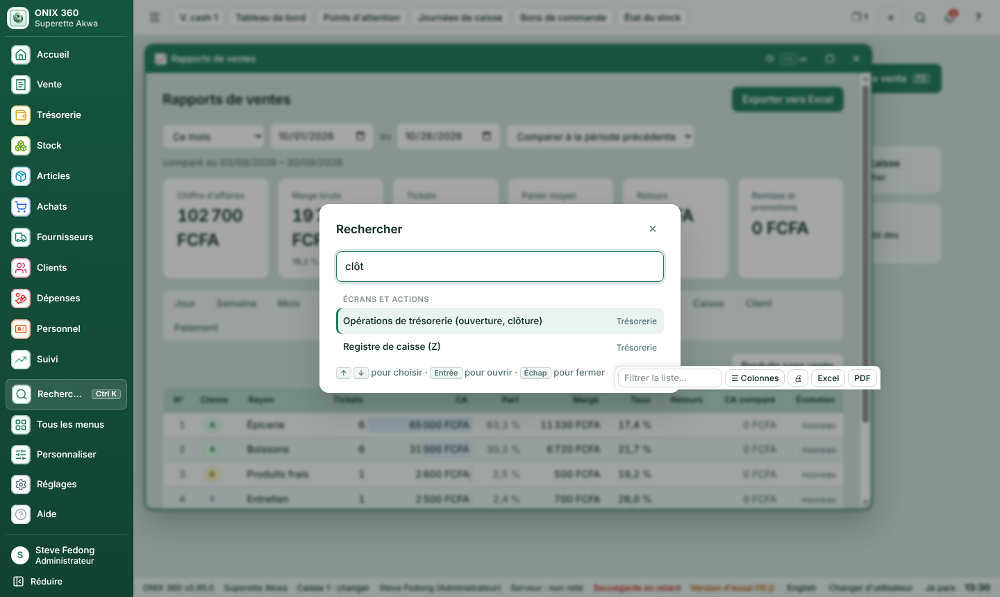
L'aide de chaque page (F1)
Le bouton rond ? en haut à droite, ou la touche F1, ouvre l'aide de la page affichée : ce qu'elle sert à faire et les étapes, section par section. À la caisse, F1 cherche un produit : utilisez alors le bouton ?.
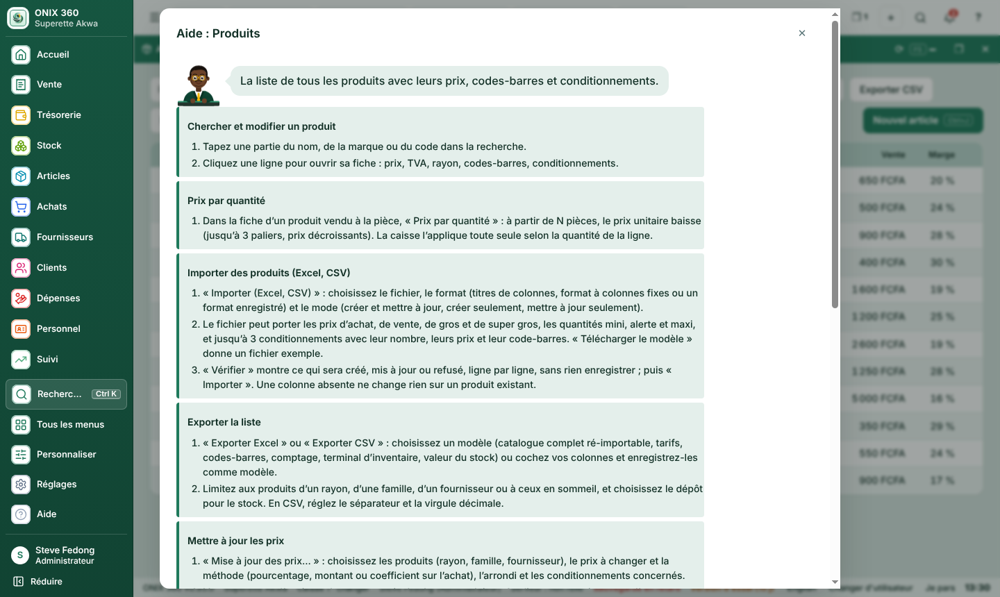
Dans le menu Aide se trouvent aussi le Guide de démarrage, Quoi de neuf (les nouveautés après une mise à jour) et les Raccourcis clavier (Ctrl+/), résumés à l'annexe A.
Adapter l'écran à chacun
Cliquez sur votre nom, en bas de la barre verte :
- Personnaliser les onglets rapides : choisissez les écrans en haut. Un clic droit sur un onglet l'épingle ou le retire.
- Personnaliser la barre latérale : choisissez et rangez les menus de la barre verte.
- Thème : clair, sombre ou contraste fort (utile en plein soleil ou pour mieux lire).
- Réduire, tout en bas : la barre verte ne montre plus que les icônes, pour un écran plus large.
- English, dans la barre du bas : l'écran passe en anglais pour cette personne.
Juste après une action (supprimer une ligne, enregistrer…), Ctrl+Z l'annule pendant 10 secondes, quand le message en bas à droite le propose.
Paramétrer
Ce que l'on règle une fois, avant la première vente : le magasin, l'imprimante, les caisses, les utilisateurs, les articles et le stock de départ. Comptez une demi-journée pour une superette de 500 articles, plus si le catalogue est saisi à la main.
Les paramètres du magasin
Tous les réglages du magasin sont dans Réglages › Paramètres. Ils sont rangés par sections ; la case Chercher en haut retrouve un réglage par un mot (« arrondi », « logo », « crédit »). N'oubliez pas Enregistrer en haut à droite.
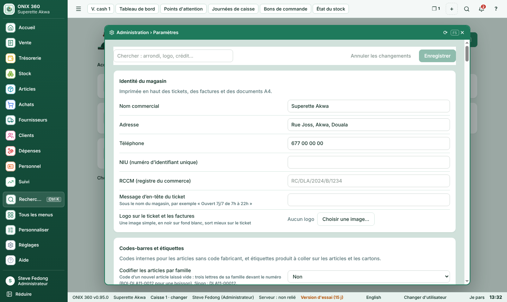
Les sections à régler au début
| Section | Ce qu'on y règle |
|---|---|
| Identité du magasin | Nom commercial, adresse, téléphone, NIU, RCCM, message d'en-tête du ticket (« Ouvert 7j/7 de 7 h à 22 h ») et logo (Choisir une image…, de préférence en noir sur fond blanc). |
| TVA, stock et écart de caisse | Régime de TVA, vente autorisée ou non quand le stock est à zéro, seuil au-delà duquel un écart de caisse doit être justifié. |
| Ventes et caisse | Remise maximale sans le code du gérant, arrondi, retours, plafond d'espèces dans le tiroir. |
| Écran de caisse | Présentation de la caisse (Moderne, Classique ou Conventionnel), organisation de la vente (vendeur-caissier ou séparés), modèle utilisé pour chaque impression. |
| Caisses électroniques | Une caisse électronique centrale (le numéro MoMo/OM du magasin) ou des caisses indépendantes par caissier. |
| Crédit clients | Plafond et délai de paiement proposés pour un nouveau client ; 0 = pas de crédit sans l'accord du gérant. |
| Carte de fidélité | Activer la fidélité : points par achat, valeur d'un point, minimum à atteindre. |
| Stock, Achats | Alerte de péremption, délai de paiement des nouveaux fournisseurs, paliers de déstockage. |
| Pointage du personnel, Paie | Heure d'embauche, tolérance de retard, paie d'après le pointage, retenues légales (chapitre 16). |
| Sécurité | Déconnexion automatique après quelques minutes sans activité. |
| Numérotation des pièces | Préfixes des factures, bons, devis… |
| Imprimantes et tiroir-caisse (ce PC) | L'imprimante de tickets de ce poste, sa largeur, l'ouverture du tiroir, la page de test. |
| Afficheur client, Étiquettes balance (ce PC) | Le deuxième écran tourné vers le client ; les codes des étiquettes de la balance. |
Les sections marquées (ce PC) ne valent que pour le poste où vous êtes : réglez l'imprimante sur chaque PC de caisse. Les autres sections valent pour tout le magasin.
Régler l'imprimante de tickets
- Installez d'abord l'imprimante dans Windows avec le pilote du fabricant, et vérifiez qu'elle imprime une page de test Windows.
- Dans Réglages › Paramètres, tapez « imprim » dans la recherche.
- Dans Imprimantes et tiroir-caisse (ce PC), choisissez l'imprimante de tickets, la largeur du papier (80 ou 58 mm) et l'imprimante A4.
- Cliquez sur Imprimer une page de test. Le tiroir doit s'ouvrir et les accents s'imprimer correctement ; sinon, essayez une autre table de caractères.
- Enregistrer.
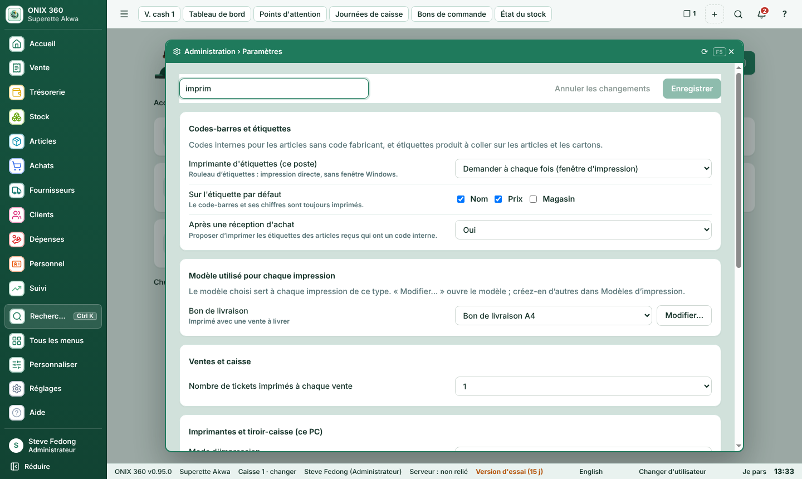
Choisir la présentation de la caisse
Dans la section Écran de caisse, trois présentations sont proposées : Moderne (tuiles des produits et gros boutons, idéal pour un écran tactile), Classique et Conventionnel (tableau des lignes, proche des anciens logiciels). Les fonctions et les touches sont les mêmes. C'est aussi là que l'on passe de « vendeur-caissier » à « vendeur et caissier séparés », et que l'on choisit les rôles qui arrivent en Caisse seule : la fiche de vente couvre alors tout l'écran, sans menus ni onglets.
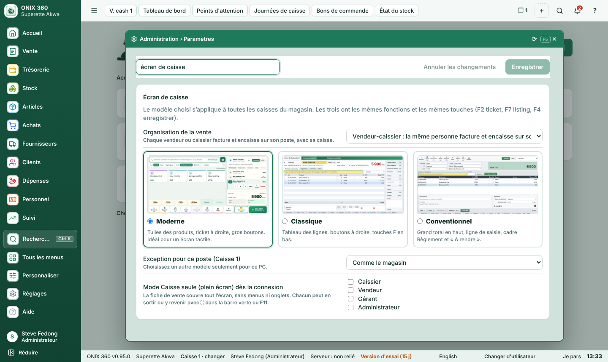
Couleurs, badges et modèles d'impression
- Réglages › Couleurs et badges : la couleur principale et secondaire de votre entreprise (ou une palette toute prête). Tout l'écran, les badges du personnel, les cartes de fidélité et les documents A4 les prennent. Le modèle de badge (Bandeau, Arcs, Angles), sa taille et ce qu'il montre (photo, rôle, matricule, code-barres) se règlent en dessous.
- Réglages › Modèles d'impression : pour chaque document (ticket, facture A4, facture listing, devis, bon de livraison, bon de commande), le modèle utilisé par défaut. Modifier ouvre l'éditeur (marges, police, colonnes, mentions) avec l'aperçu à droite ; Copier crée une variante ; Rétablir l'original remet le modèle livré.
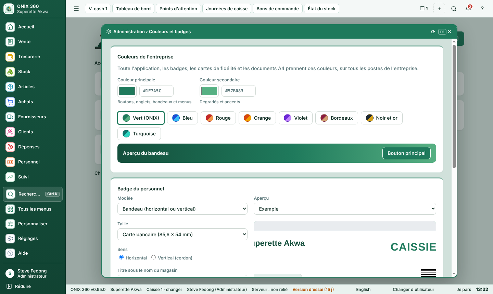
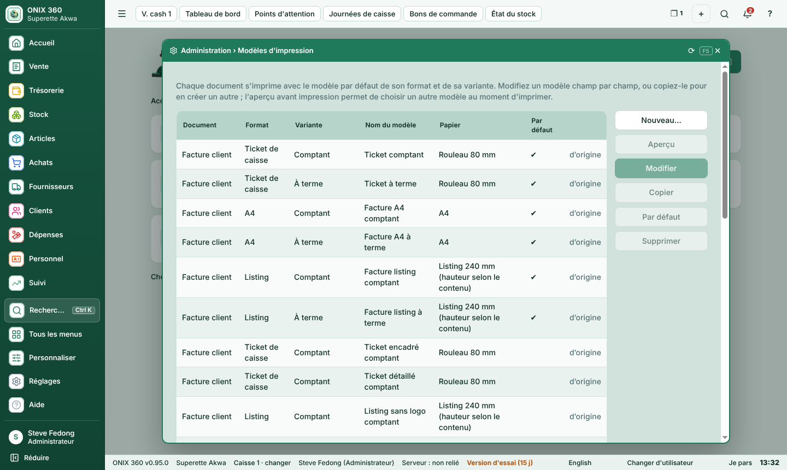
Paiement mobile MTN et Orange
Sans réglage, la caisse enregistre un paiement MoMo ou OM avec la référence du SMS reçu par le client. Avec un compte marchand, la caisse peut aussi demander le paiement sur le téléphone du client : il confirme avec son code secret et le paiement s'ajoute tout seul. Réglez-le dans Réglages › Paiement mobile (MTN, Orange), sur chaque PC qui encaisse : mode Simulation pour essayer, Test ou Réel avec les clés de votre compte marchand.
Caisses, utilisateurs et droits
Avant de vendre, chaque poste a besoin d'une caisse, et chaque personne d'un compte. Un caissier sans caisse attribuée ne peut pas vendre.
Les trois types de caisse
| Type | Ce qu'elle reçoit |
|---|---|
| Espèces | Les billets et pièces du tiroir. Une par poste de vente. On la compte à chaque clôture. |
| Électronique | MTN Mobile Money, Orange Money et carte. Par exemple une caisse pour MTN et une pour Orange, ou une seule pour tout. |
| Banque | Virements et chèques. |
À la vente, chaque paiement va tout seul dans la caisse de son type : les espèces au tiroir, le MoMo à la caisse électronique du caissier, le chèque à sa caisse banque.
Créer une caisse
- Ouvrez Réglages › Caisses. La caisse 1 existe déjà.
- En bas de la liste, choisissez le type (Espèces, Électronique ou Banque), tapez un nom si vous voulez (« Caisse boissons », « MTN Akwa »), puis Ajouter une caisse.
- Pour une caisse électronique, Modifier permet de choisir les moyens qu'elle reçoit (MTN, Orange, carte).
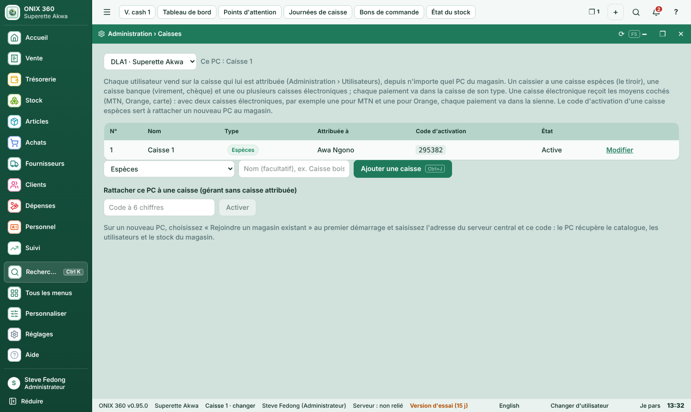
Le code d'activation (6 chiffres) d'une caisse espèces sert à rattacher un nouveau PC à cette caisse (chapitre 20).
Ajouter un employé
- Ouvrez Réglages › Utilisateurs et cliquez sur Ajouter un employé.
- Tapez le nom complet, l'identifiant (ce qu'il tapera pour se connecter : lettres, chiffres, point ou tiret) et un code secret en chiffres.
- Choisissez le rôle et le magasin.
- Pour un caissier ou un vendeur qui encaisse : cochez sa caisse espèces, et sa caisse électronique et banque si vous en avez.
- En une fois, remplissez sa fiche de collaborateur (poste, téléphone, salaire) et créez son badge : c'est facultatif mais utile pour la paie et le pointage (chapitre 16).
- Cliquez sur Enregistrer.
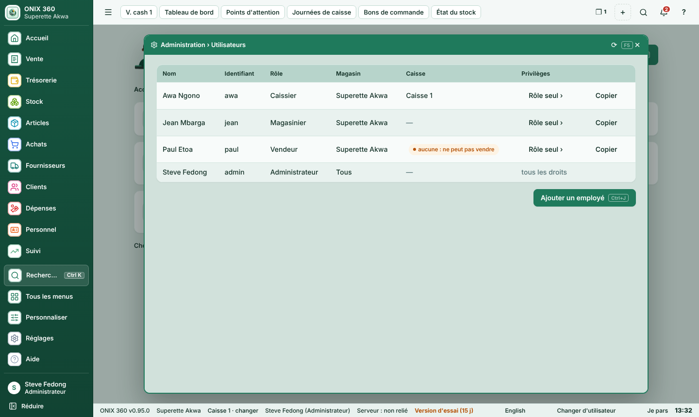
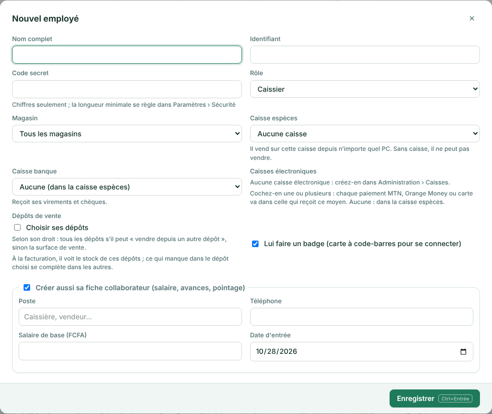
- Badge : dans la fiche, Créer son badge donne un code-barres imprimé sur une carte. À la connexion, la douchette remplit l'identifiant ; il reste à taper le code. Refaire rend l'ancien badge inutilisable (badge perdu).
- Code oublié : ouvrez la fiche de la personne et tapez un nouveau code. Débloquer rouvre un compte bloqué après trop de codes faux.
- Départ d'un employé : Supprimer l'utilisateur. S'il a déjà fait des opérations, son nom reste sur ses tickets, mais il ne peut plus se connecter.
Les droits par rôle
Dans Réglages › Droits par rôle, chaque rôle a une colonne et chaque droit une ligne, rangés par groupes à gauche (Facturation, Trésorerie, Gestion des stocks…). Le type indique si le droit ouvre un Menu, permet un Bouton (une action) ou une Fonction (une règle). Ce qui n'est pas coché disparaît des menus et des boutons. L'administrateur a toujours tout.
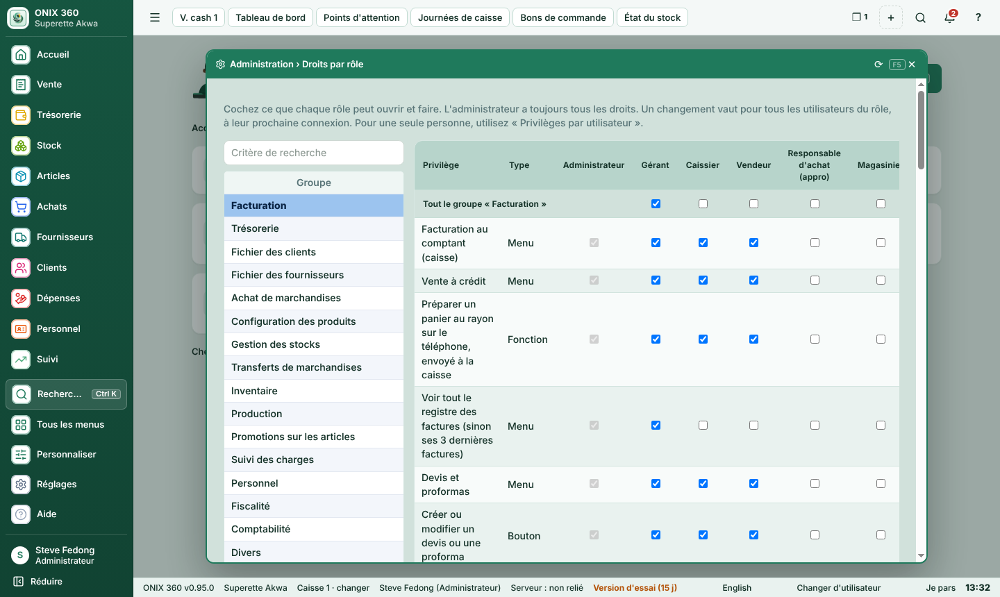
Un droit en plus ou en moins pour une seule personne
Dans Réglages › Privilèges par utilisateur, choisissez la personne : la colonne Via son rôle montre ce que son rôle lui donne. Cochez Attribué pour lui donner un droit en plus, ou Retiré pour le lui enlever, sans toucher aux autres personnes du même rôle.
Quand un caissier n'a pas le droit de faire une action (grosse remise, retour, annulation), le logiciel ne refuse pas : il demande le code d'un gérant. Le gérant tape son code sur le poste, ou accepte la demande depuis son téléphone (chapitre 20).
Les articles et les prix
Chaque produit vendu a sa fiche : son nom, son rayon, ses prix d'achat et de vente, ses codes-barres et ses conditionnements (carton, pack, pièce). C'est la base de tout le reste : bien la remplir évite les erreurs de caisse et de stock.
Rayons et familles
Les produits sont rangés par rayon (Épicerie, Boissons…) et famille (Huiles, Bières…). Le métier choisi à la création du magasin les a déjà créés. Pour les adapter : Articles › Rayonnage, puis Nouveau rayon, Nouvelle famille, Renommer ou Supprimer. Le tableau donne pour chaque famille le nombre d'articles et la valeur du stock.
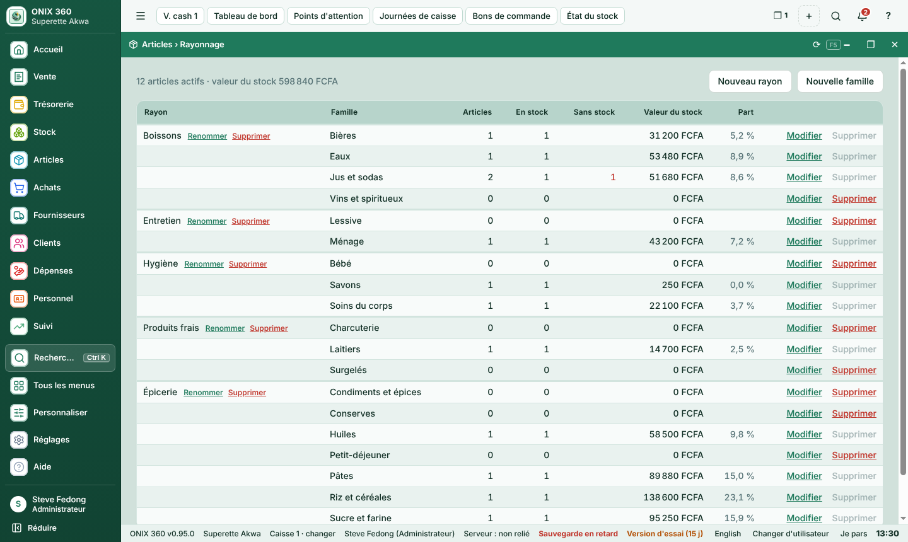
Créer une fiche article
- Ouvrez Articles › Ajouter / paramétrer une marchandise (ou Nouvel article dans la liste, Ctrl+J).
- Tapez la désignation telle qu'elle doit s'imprimer sur le ticket (« HUILE DIAMAOR 1 L »). Laissez le code article vide : il est donné tout seul.
- Choisissez le rayon / famille et l'unité de vente (pièce, ou kg / litre pour un produit vendu au poids).
- Dans Conditionnements et prix, ligne 1 : le conditionnement d'achat (CARTON DE 12, SAC DE 5, CASIER DE 12) avec son nombre de pièces, son prix d'achat, son prix de revient et son prix de vente. Lignes suivantes : les conditionnements de vente plus petits (pack, pièce). Les prix d'achat par pièce se calculent tout seuls ; la marge s'affiche en bout de ligne.
- Ajoutez les codes-barres : scannez le code de la pièce, et celui du carton s'il en a un. Sans code fabricant, un code interne est créé à l'enregistrement.
- En dessous : les prix Gros et Super gros si vous vendez aux revendeurs, les quantités minimum, d'alerte et maximum du stock, la case Périssable (suivi des lots et dates limites) et Touche rapide en caisse pour les produits les plus vendus.
- Une photo : Choisir une image…. Elle s'affiche dans la liste et dans la recherche de la caisse.
- Cliquez sur Enregistrer.
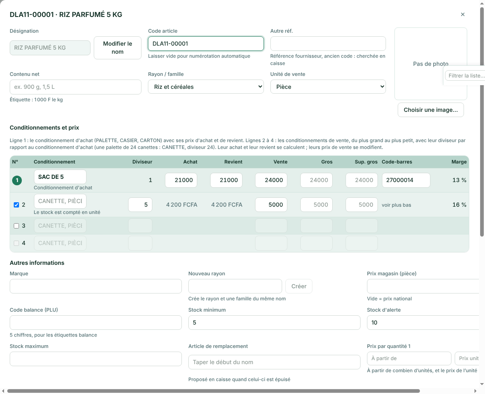
La marge des rapports et le coût du stock viennent du prix d'achat. Après chaque réception, le coût moyen (CMUP) est recalculé tout seul ; le tableau Suivi › Prix à revoir signale les produits dont le prix d'achat a monté sans que le prix de vente bouge.
La liste des produits
Articles › Liste des produits montre tous les produits avec leur code, rayon, code-barres, prix d'achat, prix de vente et marge. Tapez une partie du nom, de la marque ou du code pour filtrer ; cliquez une ligne pour ouvrir la fiche. Les boutons du haut importent, exportent vers Excel ou mettent à jour les prix en masse.
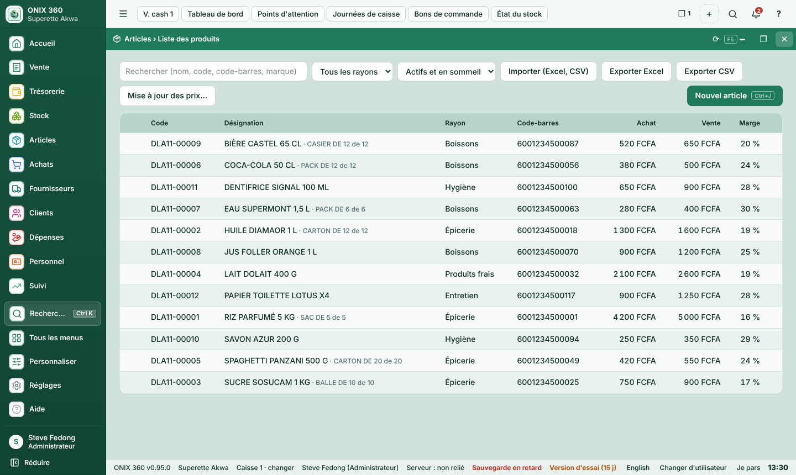
- Mise à jour des prix… : choisissez les produits (rayon, famille, fournisseur), la méthode (pourcentage, montant ou coefficient sur l'achat) et l'arrondi. L'aperçu montre l'ancien et le nouveau prix ; Appliquer change tout d'un coup, ou À une date les programme.
- Produit en sommeil : décochez Actif sur la fiche. Il reste dans l'historique mais ne se vend plus.
- Prix par quantité : sur la fiche, « à partir de 10 pièces, 1 450 FCFA » ; la caisse l'applique toute seule.
Importer le catalogue depuis Excel
Pour un catalogue de plusieurs centaines d'articles, l'import est bien plus rapide que la saisie.
- Dans la liste des produits, cliquez sur Importer (Excel, CSV), puis Télécharger le modèle.
- Remplissez le modèle dans Excel : une ligne par produit, avec la désignation, la famille, les prix d'achat et de vente, le code-barres, et si besoin jusqu'à 3 conditionnements. Vous pouvez aussi partir d'un export de votre ancien logiciel en gardant les mêmes titres de colonnes.
- Revenez dans Importer, choisissez le fichier et le mode (créer et mettre à jour, créer seulement ou mettre à jour seulement).
- Cliquez sur Vérifier : la liste montre ce qui sera créé, mis à jour ou refusé, ligne par ligne, sans rien enregistrer. Corrigez le fichier si besoin.
- Cliquez sur Importer.
Produits vendus au poids
Pour la viande, le poisson, les fruits ou le riz en vrac, choisissez l'unité kg sur la fiche. À la caisse, la quantité se tape en kilos (« 1,25 »). Avec une balance qui imprime des étiquettes à code-barres, donnez à l'article son code balance (PLU) ; la caisse lit le poids ou le prix dans le code de l'étiquette (préfixes réglés dans Étiquettes balance (ce PC)).
Étiquettes de rayon et codes-barres
Articles › Étiquettes et codes-barres :
- Onglet Étiquettes de rayon : la liste À refaire montre les produits jamais étiquetés et ceux dont le prix a changé. Choisissez la planche (24, 40 ou 65 étiquettes par page A4) ou le rouleau, vérifiez l'aperçu à droite et imprimez.
- Onglet Codes-barres produit : pour les articles sans code fabricant. Cochez les articles et le nombre d'étiquettes, puis imprimez sur rouleau ou planche A4, à coller sur les produits.
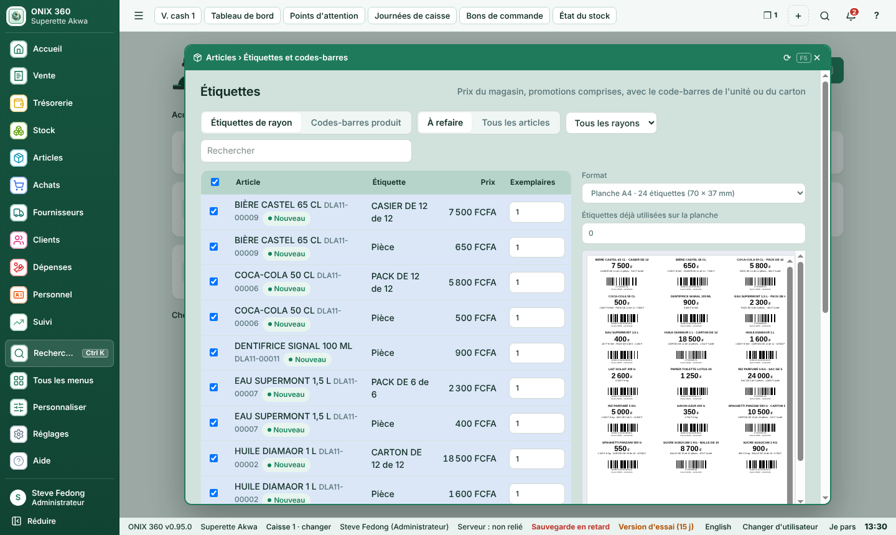
Promotions
Articles › Promotions, Nouvelle promotion : le produit, le type (prix promotionnel, « 3 achetés, 2 payés », lot à prix fixe), la période et les magasins. La caisse applique toute seule la meilleure promotion de chaque article, sans code du gérant. Affiches promo imprime les affiches A4 ou A5 avec l'ancien prix barré. Arrêter met fin à une promotion tout de suite.
Le stock de départ et la reprise des données
Le logiciel doit connaître ce que vous avez déjà en stock, ce que vos clients vous doivent et ce que vous devez à vos fournisseurs. On le saisit une fois, le jour du démarrage.
Les dépôts
Réglages › Dépôts montre la Surface de vente et la Réserve. Ajoutez une chambre froide, un deuxième magasin de stockage ou un dépôt « Avaries » pour la marchandise abîmée (elle ne se vend jamais). Dépôt des ventes choisit d'où sort la marchandise vendue en caisse.
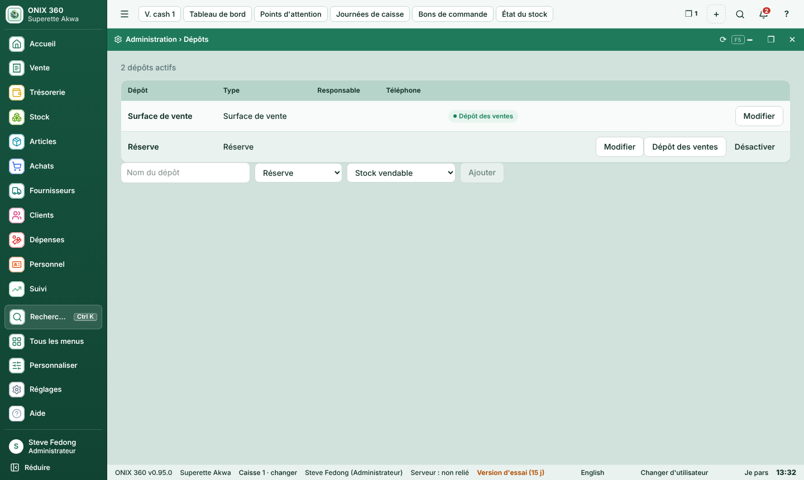
Reprendre clients, fournisseurs et stock depuis Excel
Si vous passez d'un autre logiciel ou d'un cahier, Réglages › Reprise des données importe en une fois :
- les clients avec ce qu'ils vous doivent ;
- les fournisseurs avec ce que vous leur devez ;
- le stock de départ de chaque article, avec son coût.
- Choisissez le fichier à reprendre et téléchargez son modèle Excel.
- Remplissez-le, puis Choisir le fichier rempli : l'aperçu montre ce qui sera fait et les lignes à corriger.
- Importer enregistre tout d'un bloc et passe les écritures d'à-nouveaux en comptabilité. S'il reste une erreur, rien n'est importé : corrigez et recommencez.
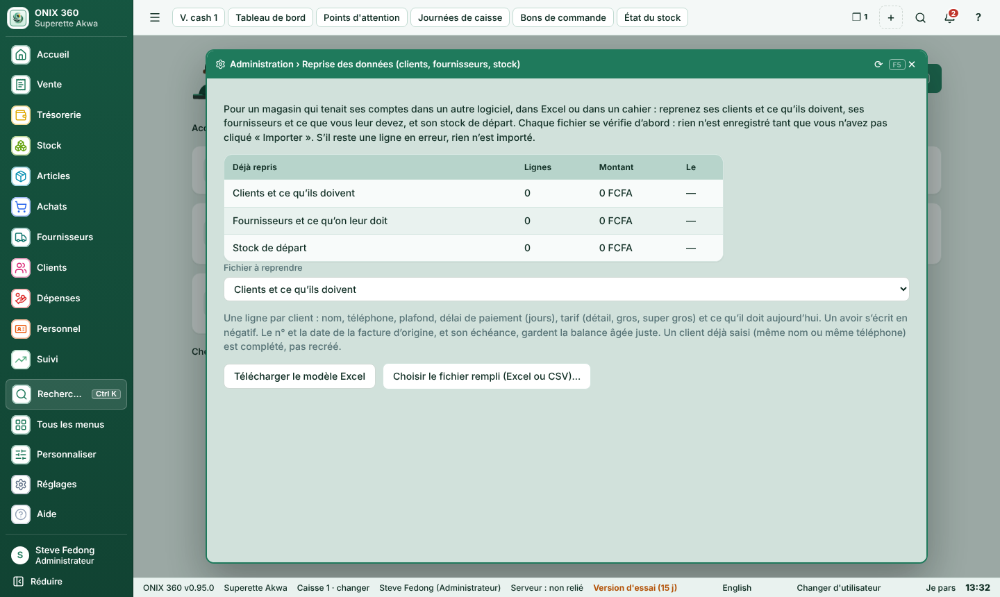
Ou bien : compter le stock de départ
Si les quantités ne sont pas encore connues, faites un inventaire global le jour du démarrage (chapitre 13) : les quantités comptées deviennent le stock de départ. Pour quelques articles seulement, une réception sans commande suffit.
Avant la première vente : la liste à cocher
- Paramètres du magasin enregistrés : identité, logo, TVA (chapitre 4).
- Imprimante de tickets réglée et page de test imprimée sur chaque PC de caisse.
- Une caisse par poste, et les caisses électroniques ou banque si besoin (chapitre 5).
- Un compte pour chaque personne, avec son rôle et sa caisse ; codes remis en main propre.
- Articles créés ou importés, avec codes-barres et prix vérifiés sur quelques produits (chapitre 6).
- Stock de départ saisi ; clients à crédit et dettes fournisseurs repris.
- Dossier de sauvegarde choisi, avec une copie sur clé USB (chapitre 18).
- Licence activée, ou date de fin de l'essai notée (chapitre 19).
- Une vente d'essai faite, annulée, puis la caisse clôturée pour que chacun voie le circuit.
Pour former un nouveau caissier sans toucher aux vrais chiffres : cliquez sur votre nom en bas de la barre verte, puis Mode formation (caisse d'entraînement). Les ventes faites dans ce mode ne comptent pas.
Au quotidien
La journée d'un magasin, dans l'ordre : ouvrir la caisse, vendre, encaisser, fermer la caisse ; puis les clients, les achats, le stock, les dépenses, le personnel et le suivi de l'activité.
Ouvrir la caisse et vendre
La caisse doit être ouverte avant la première vente du jour. Ensuite, une vente se fait en trois gestes : ajouter les produits, encaisser, valider.
Ouvrir la caisse le matin
- Ouvrez Trésorerie › Opérations de trésorerie (onglet rapide Ma caisse pour un caissier).
- Cliquez sur Ouvrir la caisse….
- Le fond de caisse laissé la veille est proposé. Vérifiez les espèces présentes dans le tiroir ; Compter par coupures aide à les compter billet par billet.
- Cliquez sur Ouvrir la caisse. Vos caisses électronique et banque s'ouvrent en même temps.
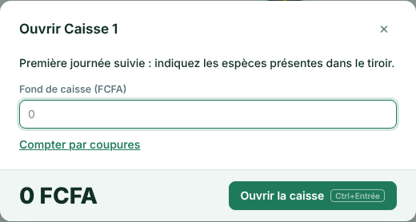
Seul un fond plus élevé que celui de la veille (pris dans la caisse centrale) demande le code du gérant.
L'écran de vente
Ouvrez Vente › Vente au comptant 1, l'onglet rapide V. cash 1, ou appuyez sur F2 depuis l'accueil. Le caissier y arrive directement à sa connexion.
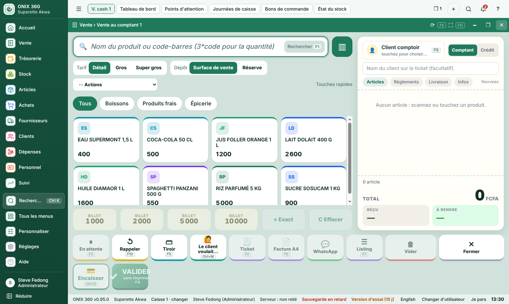
- En haut à gauche : la zone de saisie Nom du produit ou code-barres. Elle est toujours prête à recevoir un scan.
- Au milieu : les rayons et les touches rapides (tuiles des produits les plus vendus, avec leur prix).
- À droite : le ticket du client, le TOTAL, puis REÇU et À RENDRE.
- En bas : les billets (1 000, 2 000, 5 000, 10 000, Exact), puis les boutons En attente, Rappeler, Tiroir, Le client voulait…, Ticket, Facture A4, WhatsApp, Listing, Vider, Fermer, et enfin Encaisser et VALIDER.
Vente au comptant 2 (V. cash 2) est une deuxième fiche identique : elle permet de servir un autre client sans perdre la première.
Ajouter les produits
- Scannez le code-barres avec la douchette : la ligne s'ajoute au ticket. Un deuxième scan du même produit augmente la quantité.
- Sans code-barres : tapez les deux premières lettres du nom. Les produits trouvés s'affichent en tuiles avec leur prix et leur stock ; touchez la bonne, ou choisissez avec les flèches et Entrée. Les touches rapides marchent aussi.
- Plusieurs pièces d'un coup : tapez
3*avant le code ou le nom (« 3*coca »). - Touchez une ligne du ticket pour ses boutons : − et + (quantité), Varier (changer de conditionnement ou de prix), % Remise et Enlever. Au clavier : +, −, F6 et Suppr.
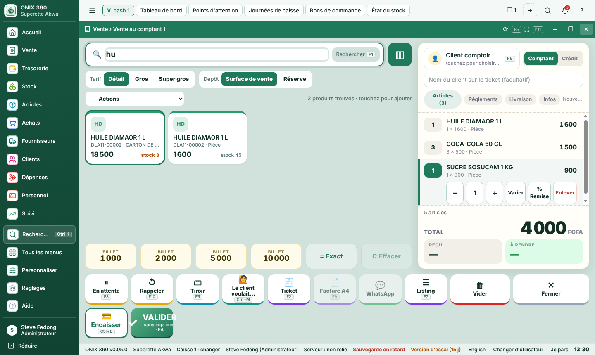
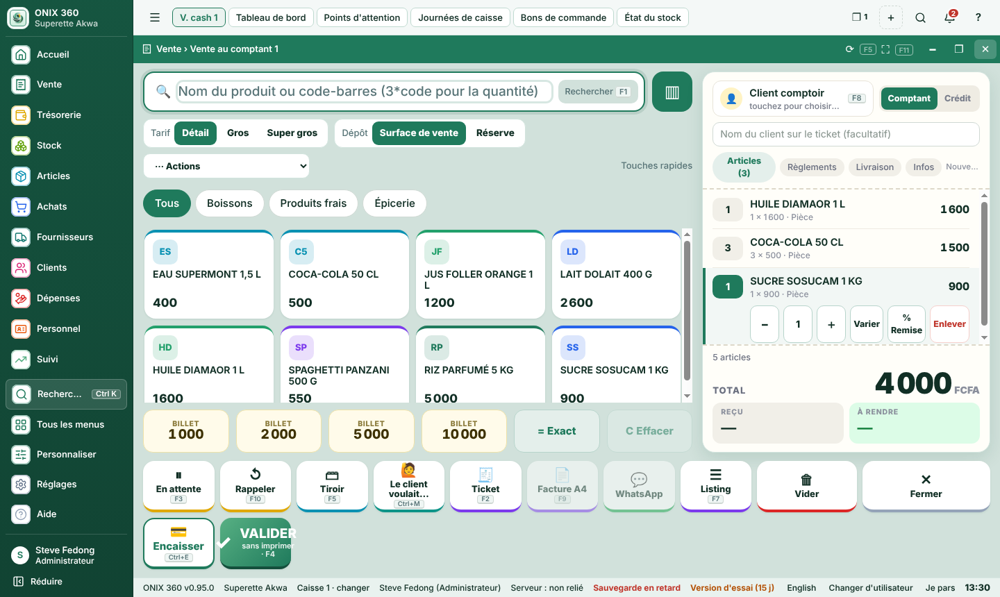
Un produit dont le stock est à zéro est signalé Épuisé ; selon les réglages, la vente est bloquée ou demande le code du gérant. Un prix modifié à la main ne peut jamais descendre sous le prix de revient.
Encaisser en espèces
- Touchez les billets reçus (1 000, 2 000…) ou Exact, ou tapez le montant reçu. REÇU et À RENDRE s'affichent sous le total.
- Pour finir :
- F2 : valider et imprimer le ticket de caisse ;
- F7 : valider et imprimer la facture listing ;
- VALIDER, F4 ou Entrée sur la zone de saisie vide : enregistrer sans imprimer.
- Le tiroir s'ouvre tout seul. Rendez la monnaie affichée.
Fiche vide, F2 réimprime le dernier ticket.
Mobile Money, carte, chèque, paiement mixte
- Cliquez sur Encaisser (Ctrl+E).
- Choisissez le moyen : Espèces, MTN Mobile Money, Orange Money, Carte bancaire, Bon d'achat, et selon les réglages chèque, virement, points fidélité.
- Tapez le montant et, pour un paiement mobile, la référence du SMS reçu par le client. Ajouter le paiement.
- Un paiement peut être mixte : une partie en espèces, le reste en MoMo. Ajoutez chaque paiement, puis Valider le ticket quand le reste à payer est à zéro.
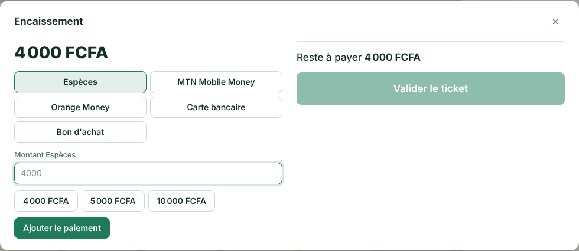
Avec le paiement mobile réglé sur le PC (chapitre 4), tapez le téléphone du client et Demander le paiement : il confirme sur son téléphone et le paiement s'ajoute avec sa référence.
Pas de monnaie ? Cochez-le à l'encaissement : le montant va sur le compte du client choisi, ou devient un bon de monnaie imprimé pour un client de passage, valable à son prochain achat.
Choisir le client, tarif gros
Touchez Client comptoir en haut du ticket (F8) pour choisir un client enregistré : ses prix (gros, super gros, prix négociés) s'appliquent et son solde s'affiche. Nouveau client le crée sur place. Pour un client de passage, tapez simplement son nom sous le bouton : il s'imprime sur le ticket.
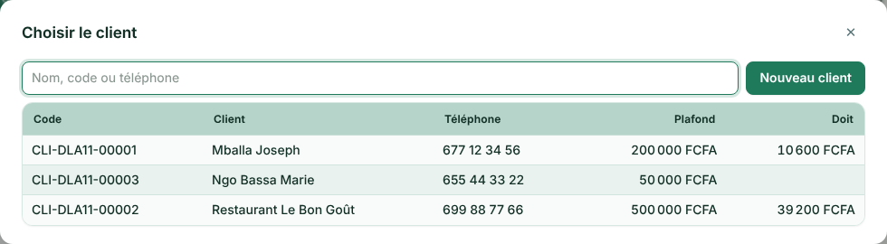
Les boutons Tarif (Détail, Gros, Super gros) et Dépôt (Surface de vente, Réserve) changent le tarif ou le dépôt pour cette fiche seulement.
Mettre un ticket en attente
Le client a oublié quelque chose au rayon ? En attente (F3) met la fiche de côté ; servez le client suivant. Au retour, Rappeler (F10) la reprend. Rappeler montre aussi les paniers préparés au rayon par les vendeurs sur leur téléphone.
Remise
Choisissez la ligne, puis % Remise (F6) : en pourcentage ou en montant. Au-delà de la remise permise par les paramètres, le code d'un gérant est demandé. Les remises sont visibles dans les rapports et le contrôle des caissiers.
Le menu Actions
La liste Actions, sous la zone de saisie, regroupe les opérations moins fréquentes :
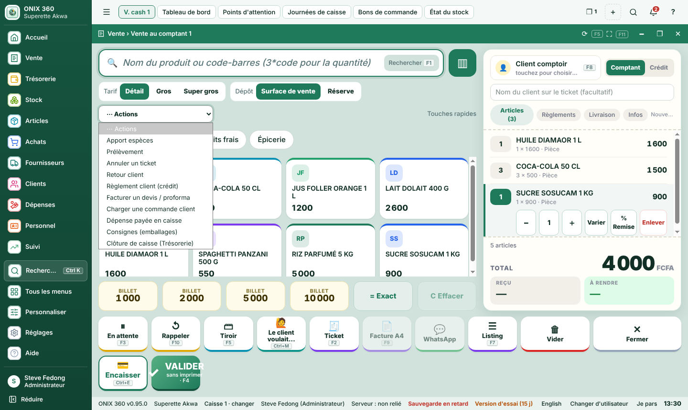
- Apport espèces et Prélèvement : mettre de la monnaie dans le tiroir, ou en retirer vers la caisse centrale.
- Annuler un ticket : avec le motif et le code du gérant.
- Retour client : scannez le ticket, choisissez les articles rapportés ; le client est remboursé ou reçoit un bon d'avoir.
- Règlement client (crédit) : un client vient payer sa dette.
- Facturer un devis / proforma, Charger une commande client.
- Dépense payée en caisse : un taxi, un achat de sachets payé avec les espèces du tiroir ; un bon de sortie s'imprime.
- Consignes (emballages) : casiers et bouteilles consignés.
- Clôture de caisse.
Retrouver et réimprimer une facture
- Vente › Mes factures : vos dernières factures ; cliquez pour la voir, réimprimer le ticket ou la facture A4, ou l'envoyer par WhatsApp. Sans le droit « Voir tout le registre », seules vos trois dernières sont visibles.
- Scanner le code-barres d'un ticket dans la zone de saisie retrouve la vente : réimpression, facture A4, retour.
- Facture A4 (F9) imprime la facture du ticket avec le client et la TVA. WhatsApp envoie le ticket au téléphone du client.
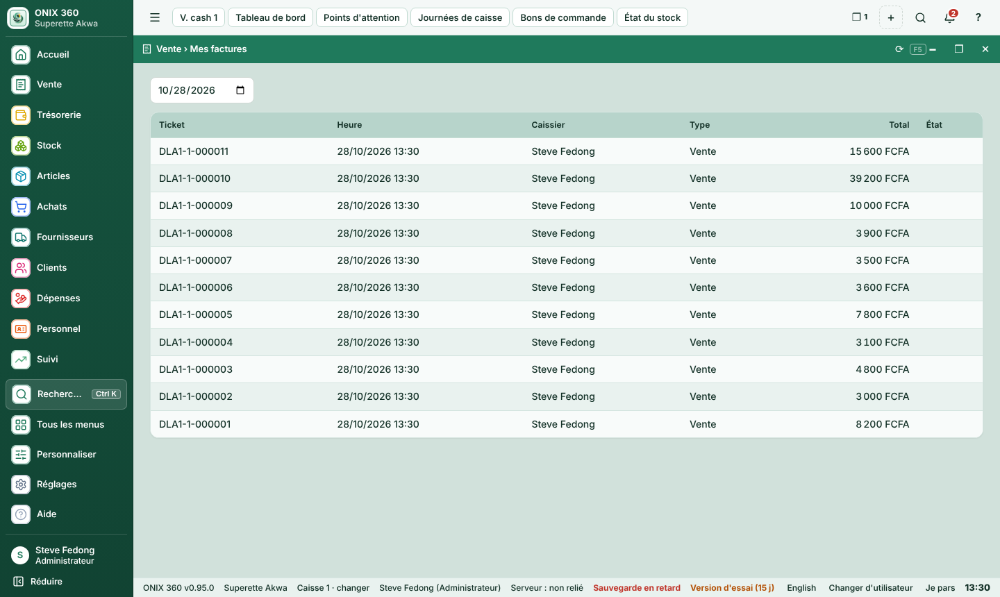
Ce que le client voulait
Un client demande un produit en rupture ou que vous ne vendez pas ? Le client voulait… (Ctrl+M) le note, avec son téléphone si vous voulez le prévenir. Ces ventes manquées alimentent les propositions de commande, et l'écran Clients à prévenir prépare le message WhatsApp quand le produit arrive.
Panne de courant : le carnet à souches
Pendant une coupure, écrivez les ventes sur le carnet à souches. Quand le PC repart, bouton Carnet : tapez le numéro de la souche et l'heure notée, puis saisissez la vente. Le Z montre ces ventes à part.
Vendeur et caissier séparés
Dans une quincaillerie, une boutique de pièces ou une grande surface, le vendeur conseille et facture le client sur son PC ; le client va payer à une caisse centrale. Le vendeur ne touche jamais l'argent ; le caissier ne voit que les factures à encaisser.
Mettre en place
- À la création du magasin, choisissez Vendeur et caissier séparés ; plus tard : Réglages › Paramètres, section Écran de caisse, Organisation de la vente.
- Les PC des vendeurs et celui de la caisse doivent être reliés au serveur central (chapitre 20) : c'est par lui que les factures passent d'un PC à l'autre.
- Créez les vendeurs avec le rôle Vendeur, sans caisse ; le caissier avec le rôle Caissier et sa caisse.
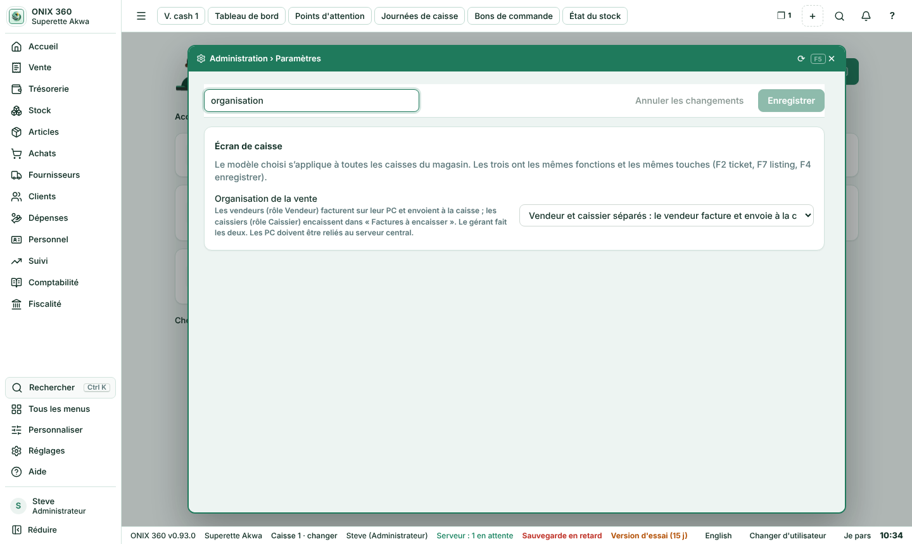
Le vendeur facture et envoie à la caisse
- Le vendeur fait la fiche comme une vente normale : produits, quantités, remises permises, nom du client.
- Il clique sur ENVOYER à la caisse (F4). Un bon s'imprime avec le numéro de la facture ; il dit au client : « passez à la caisse, facture n° 1 ».
- Mes factures montre ses factures envoyées et leur état : à encaisser, encaissée, rendue par la caisse.
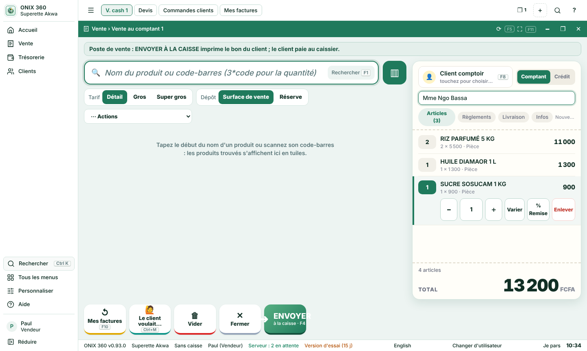
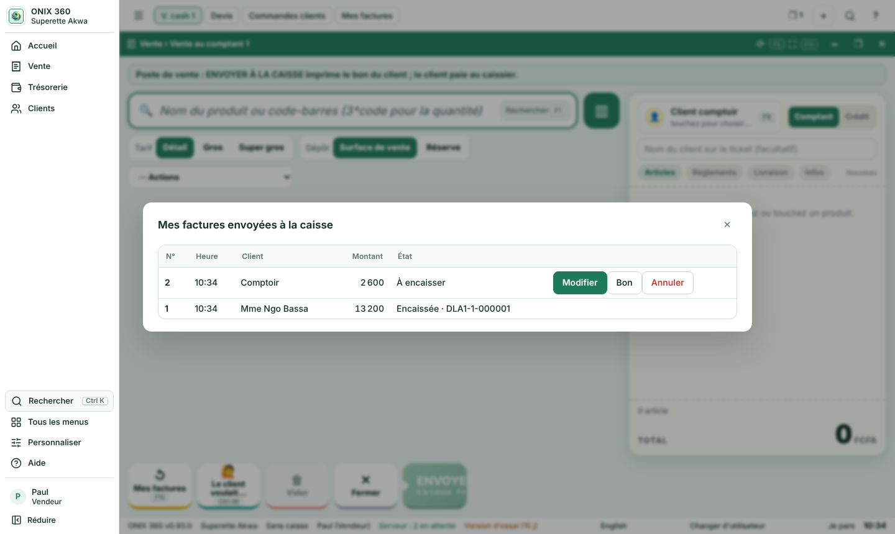
Le caissier encaisse
- Sur le poste de caisse, Vente › Factures à encaisser : les factures envoyées arrivent toutes seules dans la liste.
- Touchez la facture du client, ou scannez le bon qu'il présente, ou tapez son numéro puis Entrée. Le récapitulatif s'affiche : articles, remises, montant à payer.
- Espèces : touchez les billets ou tapez le reçu, puis Encaisser (F4) ou Encaisser + ticket (F2). Mobile Money, carte, bon ou compte client : Autre paiement (Ctrl+E).
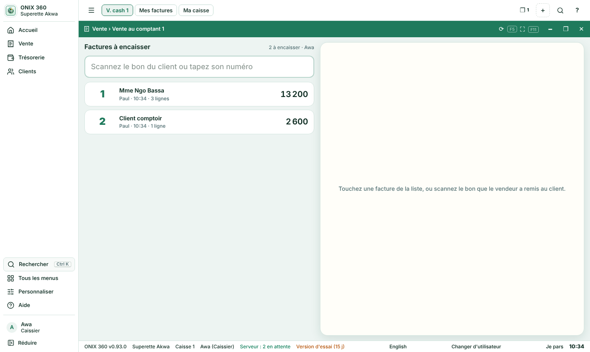
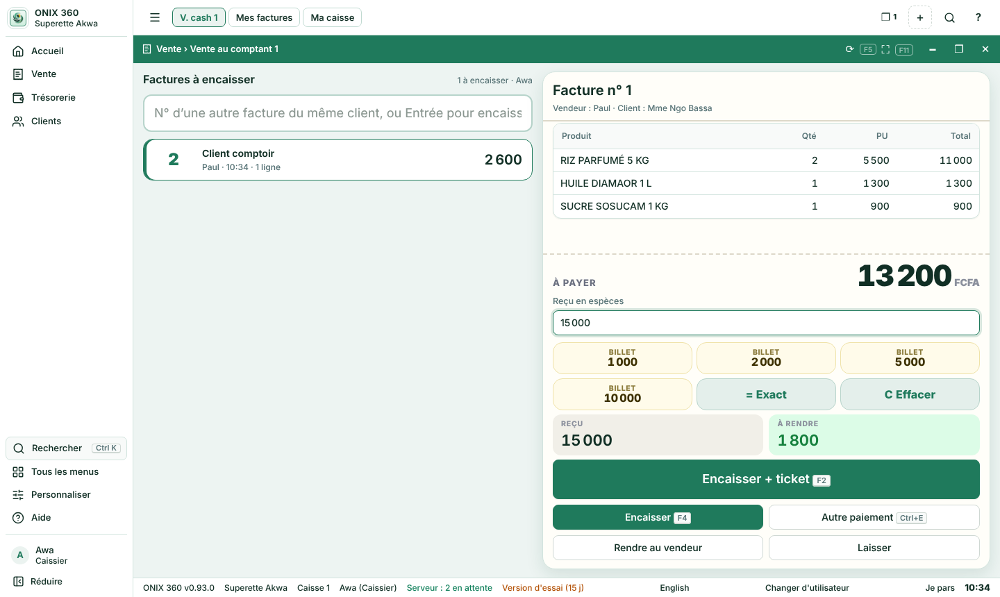
La vente compte pour le vendeur (objectifs, commissions) ; l'argent entre dans la caisse du caissier.
Le client change d'avis
- Il ajoute un article : le vendeur fait une deuxième facture ; le caissier tape son numéro pendant que la première est ouverte, et les deux s'encaissent en un seul ticket.
- Il retire un article : Rendre au vendeur avec le motif. Le vendeur corrige (Modifier) et renvoie la facture avec le même numéro. Pendant ce temps, la caisse la voit « en modification ».
- Il part sans payer : Laisser remet la facture dans la liste ; le vendeur peut l'Annuler.
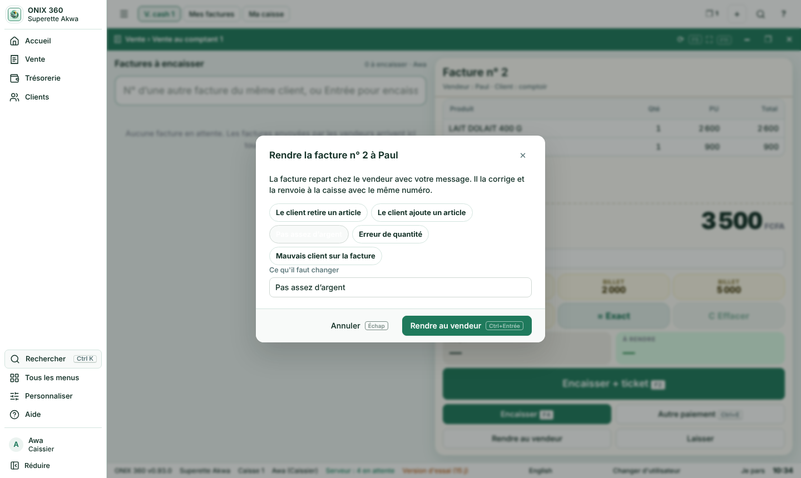
Fermer la caisse et suivre la trésorerie
Le soir, chaque caisse se compte et se clôture. Le logiciel compare ce qui a été compté à ce qui aurait dû être là : la différence est l'écart de caisse. La recette est versée à la caisse centrale.
La journée de caisse
Trésorerie › Opérations de trésorerie montre la journée de la caisse choisie : l'ouverture, les Entrées (ventes, règlements, apports) à gauche, les Sorties (dépenses, prélèvements) à droite, avec leurs totaux.
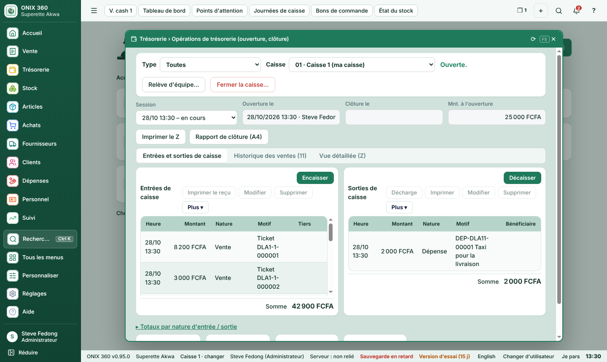
- Encaisser (volet Entrées) : un client qui règle, un fournisseur qui rembourse, un employé qui rend une avance, une autre recette. Un reçu s'imprime.
- Décaisser (volet Sorties) : un reversement à la caisse centrale, une facture fournisseur, une charge, une avance ou un salaire. Le code du gérant est demandé et un bon s'imprime.
- Relève d'équipe… : un caissier en remplace un autre sans fermer la caisse. Celui qui part compte le tiroir ; celui qui arrive se connecte ; un bon de passation est signé par les deux.
Clôturer la caisse le soir
- Avant de compter, vérifiez qu'aucun ticket n'est en attente et qu'aucun paiement Mobile Money n'est à confirmer : la fenêtre de clôture le rappelle.
- Dans Trésorerie › Opérations de trésorerie, cliquez sur Fermer la caisse….
- Comptez les billets et les pièces du tiroir et tapez le nombre de chaque coupure (10 000, 5 000, 2 000… jusqu'à 1 FCFA). Le total se calcule.
- Cliquez sur Valider le comptage.
- Indiquez le fond laissé dans le tiroir pour demain. Le reste est versé à la caisse centrale : un bon de versement s'imprime, à signer et à remettre avec l'argent.
- Le rapport Z de la journée est prêt : Imprimer le Z le sort sur le ticket, Rapport de clôture (A4) sur une page A4.
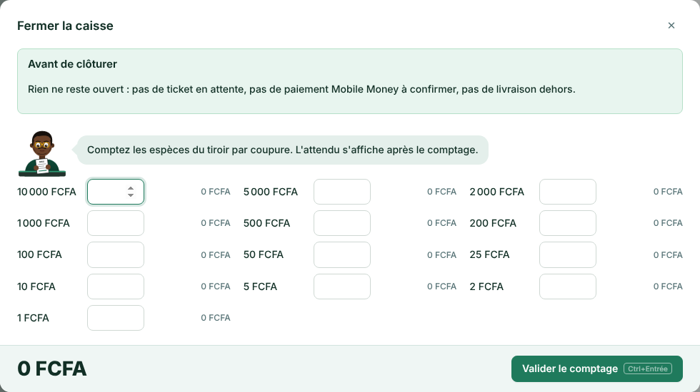
Le caissier ne voit pas l'attendu avant de compter : il compte ce qui est vraiment dans le tiroir. S'il y a un écart au-delà du seuil réglé, le logiciel lui demande d'appeler le gérant. Le gérant voit l'écart, recompte si besoin, et saisit le motif.
Caisse électronique : Clôturer… affiche les sorties du jour par ce compte ; tapez le solde lu sur chaque téléphone. Avec une caisse électronique centrale, transférez la recette vers le numéro du magasin et notez la référence de chaque transfert avant Clôturer et verser.
Écarts et rapports Z (gérant)
- Trésorerie › Registre de caisse (Z) : chaque journée clôturée avec son numéro de Z, l'attendu, le compté et l'écart. Cliquez pour revoir ou réimprimer le Z.
- Trésorerie › Historique des journées de caisse : toutes les journées, par caisse et par type ; un écart non justifié est signalé. Justifier l'écart… enregistre le motif après en avoir parlé avec le caissier.
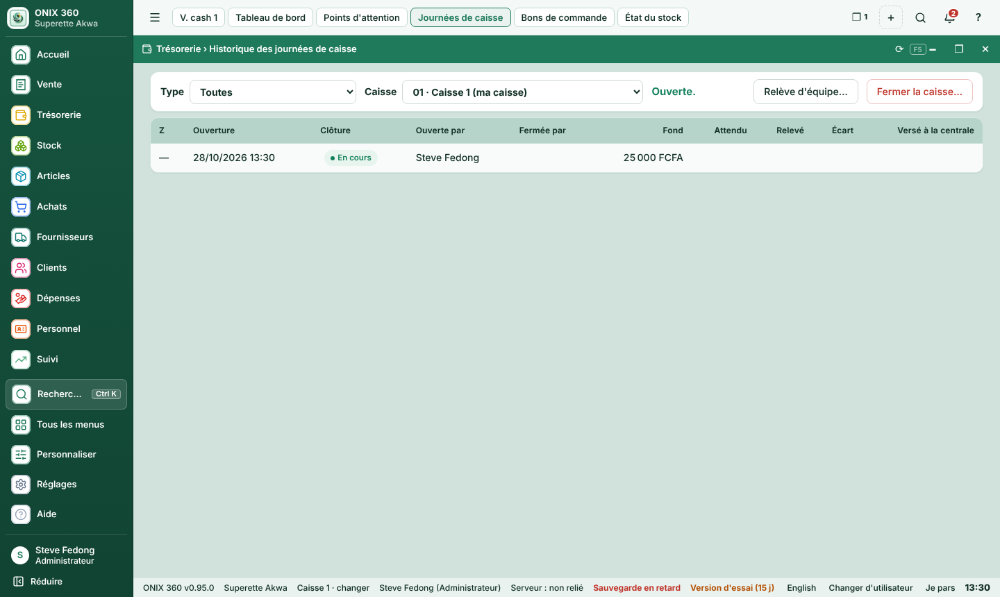
La caisse centrale
Trésorerie › Caisse centrale est le coffre du bureau : elle reçoit les versements des caissiers. Entrée en caisse centrale… enregistre un apport (de l'exploitant, de la banque) ; Sortie (dépôt en banque…) un dépôt à la banque ou un paiement. Chaque mouvement imprime son bon, et le livre donne le solde.
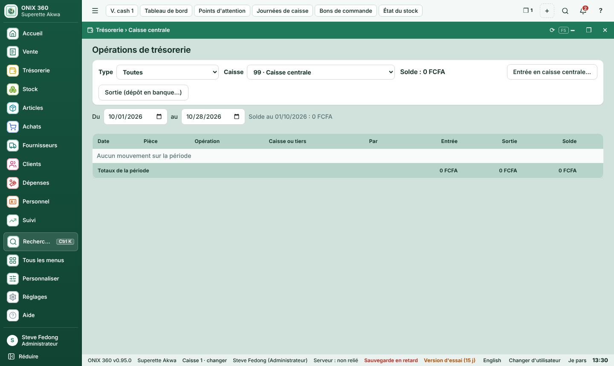
Trésorerie › Caisses électroniques fait de même pour les comptes MoMo et OM : solde de chaque caisse électronique, versements reçus, transferts, dépôts à la banque.
Où est l'argent ?
Trésorerie › Positions donne, à une date, l'argent dans chaque endroit : caisse (tiroirs), caisse centrale, banques, chèques à encaisser, Mobile Money, et le total de la trésorerie.
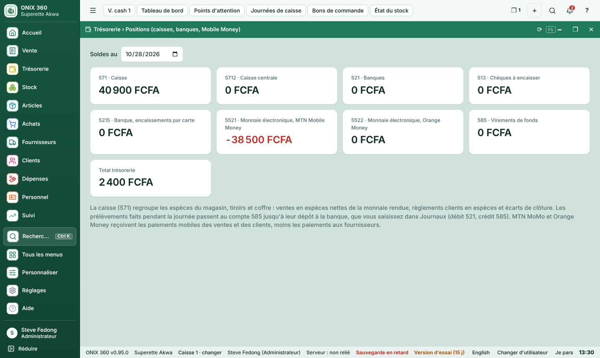
Trésorerie › Listing des opérations de caisse détaille les fonds de caisse, apports, prélèvements, dépenses et règlements de la période.
Clients, crédit, devis et commandes
Un client enregistré peut acheter à crédit dans la limite de son plafond, recevoir ses prix de gros, un relevé de compte et des relances. Les devis et les commandes préparent une vente avant le passage en caisse.
Créer un client
- Clients › Liste des clients, Nouveau client (ou depuis la caisse, F8 puis Nouveau client).
- Nom, téléphone (il sert aux relances WhatsApp), adresse, NIU pour une entreprise.
- Le tarif (détail, gros, super gros), le plafond de crédit et le délai de paiement en jours. Seul un gérant peut fixer le plafond.
- Enregistrer.
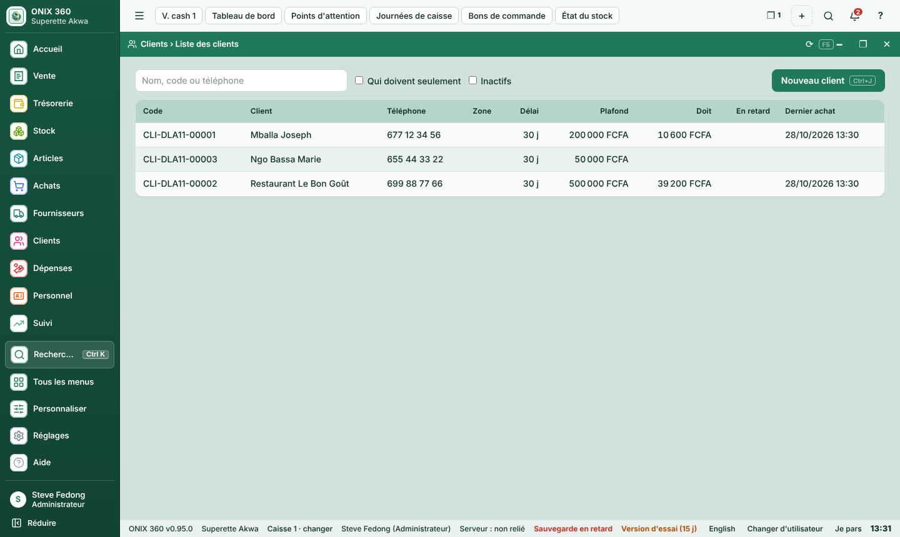
Cliquez un client pour sa fiche : onglets Compte (ce qu'il doit, en retard, plafond, encore disponible, ventes à crédit restant dues), Relevé, Achats et Fiche. Les boutons du bas impriment le relevé, le relancent par WhatsApp ou encaissent un règlement.
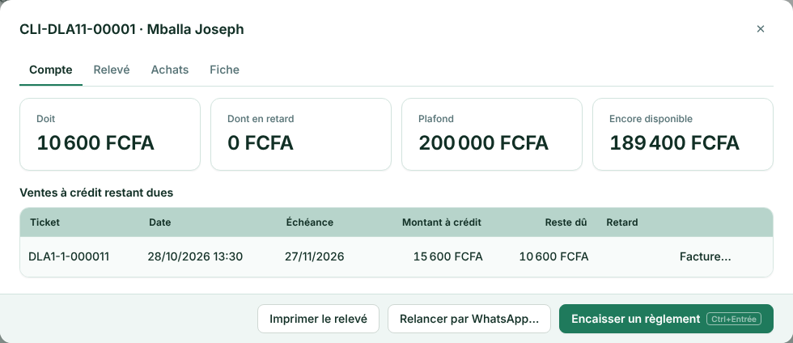
Vendre à crédit
- Ouvrez Vente › Vente à crédit (onglet V. crédit), ou passez de Comptant à Crédit en haut du ticket.
- Choisissez le client (F8) : c'est obligatoire. Son solde s'affiche en couleur : rouge s'il doit, vert s'il a un avoir.
- Ajoutez les produits comme d'habitude.
- Saisissez l'acompte éventuel, puis validez : le reste va sur son compte, avec son échéance. F9 imprime la facture A4 à lui remettre.
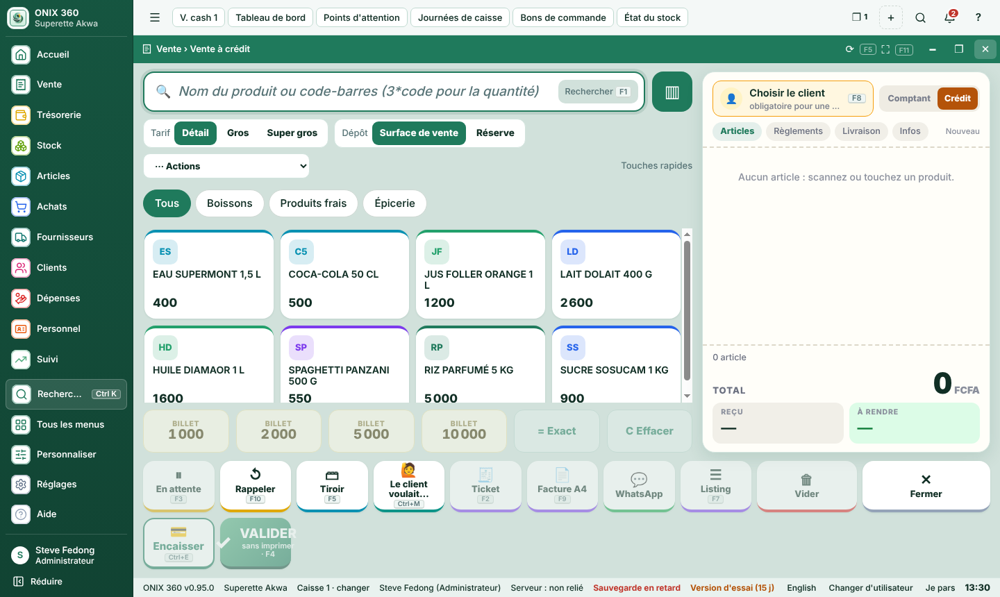
Au-delà du plafond, ou si le client a des factures en retard, le code d'un gérant est demandé.
Encaisser un règlement
- À la caisse : Actions › Règlement client (crédit). Les espèces entrent dans le tiroir et comptent dans la journée.
- Au bureau : fiche du client, Encaisser un règlement.
Choisissez le moyen (espèces, MoMo, OM, virement, chèque) et le montant. Cochez les factures que le client règle : elles sont soldées d'abord ; sinon le règlement va aux plus anciennes. Un reçu s'imprime. Trésorerie › Règlements clients reçus les liste tous.
Suivre et relancer
- Clients › Situation et échéances (balance âgée) : ce que doit chaque client, par ancienneté du retard, avec la date de sa dernière relance. Relancer ouvre un message rempli, modifiable ; Ouvrir WhatsApp l'envoie, avec le relevé en PDF si vous voulez.
- Clients › Extrait de compte client : les ventes à crédit et règlements d'une période, à imprimer pour le client.
- Clients › Factures récapitulatives : une seule facture par mois pour un client pro, avec le détail de chaque ticket.
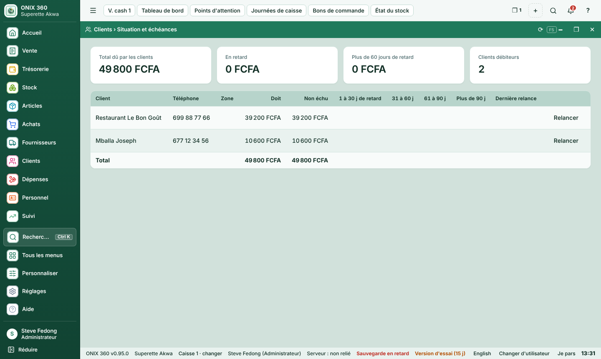
Carte de fidélité
Activez-la dans Réglages › Paramètres, section Carte de fidélité. Chaque achat d'un client enregistré lui donne des points. Imprimez sa carte depuis l'onglet Fidélité de sa fiche ; à la caisse, scannez la carte ou tapez son téléphone ; il paie avec Points fidélité à l'encaissement.
Devis et factures proforma
- Vente › Devis et factures proforma, Nouveau devis. Choisissez Devis ou Facture proforma.
- Le client (ou simplement son nom), les produits, les remises et la durée de validité (15 jours par défaut).
- Imprimez : le montant est écrit en lettres, avec la mention « Bon pour accord ».
- Quand le client revient : à la caisse, Actions › Facturer un devis / proforma. Les prix du devis sont garantis jusqu'à sa date de validité.
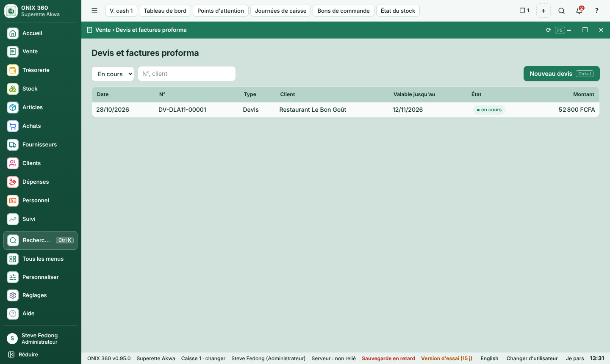
Commandes clients et livraisons
- Vente › Commandes clients : une commande prise par téléphone ou WhatsApp. Nouvelle commande : origine, client, adresse, jour et créneau, articles. Préparée réserve la marchandise ; à la caisse, Actions › Charger une commande client l'encaisse.
- Vente › Livraisons du jour : les ventes à porter chez le client (onglet Livraison du ticket, case À livrer). Partir quand le livreur s'en va, Livrée à son retour ; Feuille de route imprime sa tournée ; Retour du livreur enregistre l'argent qu'il rapporte.
Achats et fournisseurs
Le circuit d'achat : on commande au fournisseur, on reçoit la marchandise (le stock augmente), on saisit sa facture, puis on la paie. Chaque étape peut aussi se faire seule quand le fournisseur livre sans commande.
Les fournisseurs
Fournisseurs › Liste des fournisseurs, Nouveau fournisseur : nom, contact, téléphone, NIU, délai de paiement et délai de livraison. La colonne Solde dû montre ce que vous lui devez. Dans sa fiche, les articles référencés avec le prix négocié et les bonus (« 12 achetés, 10 payés ») sont repris sur les bons de commande.
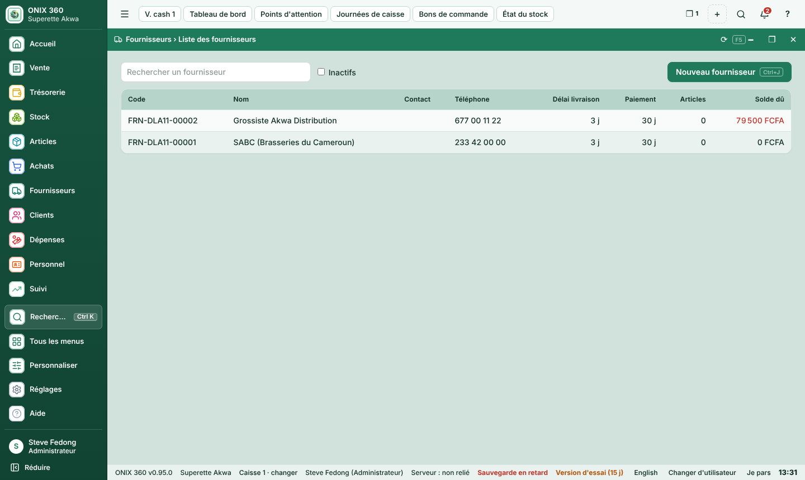
La proposition de commande
Achats › Proposition de commande calcule ce qu'il faut commander d'après les ventes des dernières semaines, le stock d'alerte de chaque fiche et le délai de livraison du fournisseur. Réglez le nombre de jours de vente à couvrir et une majoration pour un événement (fêtes, rentrée). Cochez les articles et créez en un clic un bon par fournisseur.
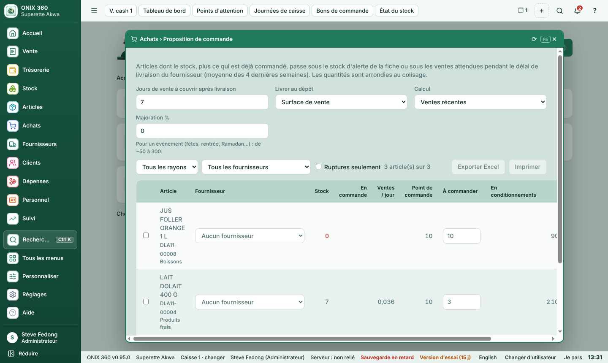
Passer une commande
- Achats › Nouveau bon de commande : choisissez le fournisseur, le dépôt de livraison et la date souhaitée.
- Scannez ou cherchez chaque article dans le panneau de gauche : quantité (en cartons), bonus, remise, prix. Entrée fait descendre la ligne dans la liste.
- Enregistrer et envoyer ; imprimez le bon ou envoyez-le par WhatsApp.
Recevoir la marchandise
- À la livraison, ouvrez Achats › Bons de commande, le bon du fournisseur, puis Réceptionner.
- Pour chaque ligne, tapez la quantité vraiment reçue, et pour un produit périssable le lot et la date limite.
- Validez : le stock entre au coût net (remises et bonus compris). Une livraison partielle laisse un reliquat attendu.
- Le logiciel propose d'imprimer les étiquettes des articles reçus.
Sans commande : Achats › Réception sans commande, même saisie, avec le fournisseur et le n° de bon de livraison. Le Registre des réceptions les garde toutes.
La facture du fournisseur
- Achats › Factures fournisseurs : saisissez la facture à partir des bons de réception ; un écart de prix ou de quantité s'affiche.
- Achats › Facture directe : le fournisseur livre et facture en même temps. Fournisseur, n° de sa facture, date, articles : le stock entre, la réception et la facture sont créées d'un coup. Cochez Réglée tout de suite si vous payez à la livraison.
Payer les fournisseurs
Achats › Échéancier fournisseurs montre ce qui reste à payer, les retards en rouge et ce qui tombe dans les 7 jours. Ouvrez une facture et Payer : caisse centrale, MoMo/OM, virement ou chèque. À la caisse, Décaisser › Règlement fournisseur fait de même avec les espèces du tiroir.
Retours fournisseur : Achats › Retours fournisseur et avoirs attendus sort du stock la marchandise rendue (casse, périmés, erreur de livraison) et suit l'avoir que le fournisseur vous doit.
Le stock
Le stock bouge tout seul : il baisse à chaque vente et monte à chaque réception. Le magasinier enregistre le reste : transferts entre dépôts, pertes et casse, inventaires.
État du stock
Stock › État du stock donne, pour chaque article, la quantité par dépôt (en cartons et en pièces), le coût moyen (CMUP), la valeur et la prochaine date limite. Le niveau est en couleur : Rupture en rouge, Alerte en orange, Normal en vert. Filtrez par dépôt ou par niveau ; exportez vers Excel.
Stock › Mouvements de stock retrace chaque entrée et sortie d'un article (réception, vente, perte, transfert) avec la date, le dépôt et la personne.
Les tâches du jour
Stock › Tâches du jour (aussi sur l'accueil) liste ce qui attend le magasinier aujourd'hui : livraisons prévues, transferts à recevoir, rayon à remplir, inventaire tournant, péremptions proches. Ouvrir mène à l'écran qui la traite ; cochez la tâche faite.
Transférer de la réserve au rayon
- Stock › Nouveau transfert : le dépôt de départ (Réserve) et de destination (Surface de vente).
- Scannez les produits et tapez les quantités.
- Expédier : le bon de route s'imprime. À l'arrivée, Réceptionner en notant la quantité reçue ; un écart reste visible.
Stock › Réassort du rayon prépare la liste de ce qu'il faut monter en rayon, et fait les transferts d'un coup.
Pertes et casse
Stock › Pertes et casse : le dépôt, le produit, le type de sortie (casse, vol, péremption, consommation interne), la quantité et le motif, puis Enregistrer la sortie. Le stock baisse et la perte est comptée dans la démarque.
Faire un inventaire
- Le gérant ouvre Stock › Inventaires, puis Nouvel inventaire global (tous les produits) ou Nouvel inventaire partiel (des rayons ou des produits choisis).
- Imprimez la fiche de comptage si vous comptez sur papier.
- Tapez les quantités comptées ; Entrée passe à la ligne suivante. Les ventes faites pendant le comptage sont déduites : pas besoin de fermer le magasin.
- Le gérant clôture : le stock est corrigé et la fiche d'écarts s'imprime.
Les compteurs installent l'application ONIX 360 Inventaire (Android). Le gérant affiche le QR code de l'inventaire, le téléphone le scanne, et les quantités comptées arrivent toutes seules dans l'inventaire (PC relié au serveur central).
Inventaire tournant : chaque semaine, Stock › Inventaire tournant de la semaine propose une courte liste de produits à compter (valeur élevée, écarts passés, jamais comptés). En un an, tout le magasin est compté sans jamais fermer.
Les dates de péremption
Pour les articles périssables, chaque réception note le lot et la date limite. Stock › Péremptions montre les lots qui périment bientôt ou déjà périmés ; sortez-les en perte. Stock › Déstockage avant péremption propose une remise par palier (10 % à 14 jours, 20 % à 7 jours…) et crée les promotions d'un clic.
Les dépenses
Loyer, ENEO, CAMWATER, transport, sachets, gardiennage : chaque dépense se saisit avec sa catégorie, ce qui la passe au bon compte comptable et la fait apparaître dans le résultat.
Saisir une dépense
- Dépenses › Nouvelle dépense.
- La catégorie (Électricité et eau, Transport, Loyer…), l'objet (« Facture ENEO octobre »), le bénéficiaire, la date et le montant payé.
- Le moyen de paiement : Espèces, MTN MoMo, Orange Money, Virement, Chèque ou Carte, avec la référence hors espèces.
- Payée avec : la Caisse centrale (le bureau) ou Ma caisse (tiroir).
- Enregistrer la dépense.
Un caissier qui paie une dépense avec les espèces de son tiroir le fait depuis la caisse (Actions › Dépense payée en caisse) : elle sort de sa journée et un bon de sortie de caisse s'imprime ; le code du gérant peut être demandé.
Suivre les dépenses
- Dépenses › Historique des dépenses : toutes les dépenses d'une période, par catégorie ; cliquez une ligne pour la voir, la réimprimer ou l'annuler avec un motif.
- Dépenses › Dépenses par catégorie : le total, le plus gros poste, la répartition par catégorie, par moyen de paiement et par mois.
Les charges fixes
Dépenses › Définition des charges fixes, Nouvelle charge fixe : déclarez une fois le loyer, les salaires, l'abonnement internet, avec leur montant et leur jour. Chaque mois, Constats de charges rappelle celles à constater ; une charge en retard s'affiche dans les points d'attention.
Suivre l'activité
Tous les chiffres viennent des ventes, achats et dépenses enregistrés : rien à recopier. Le menu Suivi les présente pour la journée, la semaine ou le mois.
Le tableau de bord
Suivi › Tableau de bord : le chiffre d'affaires, le nombre de tickets, le panier moyen et la marge brute du jour comparés à hier ; les ventes par heure ; ce qu'il faut surveiller (ruptures, alertes, lots qui périment) ; les meilleures ventes et la marge par rayon. Les boutons du haut ouvrent une vente, une dépense, une réception ou un inventaire.
Les points d'attention
Suivi › Points d'attention : une tuile par chose à traiter, avec son nombre (ruptures, stocks en alerte, écarts de caisse à justifier, factures fournisseurs en retard, clients en retard, demandes de correction…). Une tuile en couleur demande une action ; un clic ouvre l'écran qui la traite. Le nombre en rouge sur la cloche, en haut de l'écran, les résume.
Le résumé du jour sur WhatsApp
Suivi › Résumé du jour prépare le résumé d'une journée : ventes, encaissements par moyen, caisses et écarts, meilleures ventes. Envoyer par WhatsApp l'envoie au propriétaire. À droite, l'administrateur peut régler un envoi automatique chaque soir, par e-mail, à l'heure choisie.
Ventes et rapports
- Suivi › Registre des ventes : tous les tickets d'une période, filtrés par caisse, caissier, client ou état, avec les totaux (ventes, retours, remises, annulés, panier moyen). Cliquez une ligne pour le détail ; exportez vers Excel.
- Suivi › Situation des ventes : le chiffre d'affaires et la marge par jour, semaine, mois, heure, rayon, famille, article, caissier, caisse, client ou moyen de paiement, comparés à la période précédente. La classe A, B, C montre les produits qui font l'essentiel du chiffre. Produits sans vente liste ceux qui dorment en stock.
- Suivi › Rapport du mois pour le propriétaire : ventes, marge, dépenses, stock, crédit clients, trésorerie et dettes fournisseurs du mois, comparés au mois d'avant ; en PDF ou par WhatsApp.
Contrôler les caissiers
Trésorerie › Contrôle des caissiers compare chaque caissier à la moyenne de l'équipe : annulations, retours, remises, prix modifiés, tiroir ouvert sans vente, manquants. Une case rouge est nettement au-dessus de la moyenne. Ce n'est pas une preuve : cliquez le caissier pour la liste de ses gestes et vérifiez-les un par un. Suivi › Tableau de l'équipe de la semaine donne aussi les ventes et le panier moyen de chacun.
Le personnel
Le menu Personnel réunit tout votre personnel, même ceux qui n'utilisent pas le logiciel (nettoyage, vigiles, manutentionnaires) : fiches, badges, pointage, planning, congés et salaires.
Les collaborateurs
- Personnel › Collaborateurs, Nouveau collaborateur….
- Nom, poste, téléphone, CNI, salaire de base, date d'entrée, n° CNPS, et s'il est déclaré (retenues légales sur ses salaires).
- Sa catégorie : employé, journalier, stagiaire, ou agent d'une société prestataire (payé par sa société).
- Enregistrer. Deux comptes à son nom sont créés en comptabilité : ses salaires dus et ses avances.
Sur chaque ligne : Badge et pointage (photo, badge, équipe ou rotation), Dossier (CNI, contrat, certificat médical en photo ou PDF) et Extrait de son compte. Avance… paie une avance au bureau.
Le pointage
L'arrivée et le départ se notent :
- à la borne de pointage de l'entrée (Personnel › Borne de pointage, en plein écran) : la personne scanne son badge ou tape son numéro et son code ; une photo est prise ;
- ou à la connexion au logiciel, et au départ avec Je pars ;
- ou par une pointeuse à empreinte reliée au réseau.
Personnel › Pointage du personnel donne pour le mois les jours de présence, les heures, les retards et les absences de chacun. Un oubli se corrige avec Corriger et un motif. Personnel › Qui est là montre en direct les présents, les retards et les absents.
Planning et congés
- Personnel › Planning de la semaine : les horaires de chacun, jour par jour, avec les repos et les congés ; Imprimer le planning pour l'afficher.
- Personnel › Congés du personnel : le solde de congés payés de chacun, Nouveau congé… (payé, maladie, sans solde, permission), à accorder ou refuser.
Les salaires du mois
- Personnel › Salaires du mois, choisissez le mois : le salaire de base et les avances à retenir sont proposés ; avec la paie d'après le pointage, le brut tient compte des absences, retards et heures supplémentaires.
- Corrigez si besoin, puis Constater les salaires.
- Payer… règle le net au bureau (caisse centrale, MoMo/OM ou banque) ; à la caisse : Décaisser › Salaire.
- Bulletin imprime le bulletin de paie. Avec la paie activée dans les paramètres, la CNPS et les impôts retenus (IRPP, CAC, CFC, RAV, TDL) sont calculés, et Imprimer l'état du mois donne ce qu'il faut verser.
Comptabilité et fiscalité
ONIX 360 tient la comptabilité au plan SYSCOHADA tout seul : chaque vente, achat, dépense, règlement et clôture de caisse passe son écriture. Le comptable vérifie, complète par des écritures manuelles et sort les déclarations.
Les journaux et les comptes
- Comptabilité › Journaux : les écritures par journal (ventes VE, achats AC, caisse CA, banque, Mobile Money MM), avec leur pièce et leur libellé. Saisir une écriture pour une opération manuelle équilibrée ; Corriger sur une ligne ; Exporter pour votre cabinet comptable.
- Comptabilité › Grand livre : tapez un compte (571 caisse, 411 clients, 401 fournisseurs…) ou un tiers : chaque écriture avec le solde progressif.
- Comptabilité › Balance générale : tous les comptes avec débit, crédit et solde. « Balance équilibrée » confirme que les débits égalent les crédits.
- Comptabilité › Plan comptable : les comptes SYSCOHADA et ceux que vous ajoutez.
TVA et états financiers
- Fiscalité › Déclaration de TVA (magasin au régime du réel) : le mois à déclarer, le chiffre d'affaires par taux, la TVA collectée et déductible, le crédit reporté et l'acompte d'impôt. Imprimez pour la DGI.
- Fiscalité › Bilan, compte de résultat et DSF : le bilan, le compte de résultat, le tableau des flux de trésorerie et les notes annexes de l'exercice, avec les références de la DSF ; Imprimer (A4) ou Export pour la DSF.
- Fiscalité › Impôt sur le résultat : le calcul de l'impôt et du minimum de perception.
Pilotage
- Comptabilité › Trésorerie prévisionnelle : semaine par semaine, ce qui va entrer (clients) et sortir (fournisseurs, charges fixes). Une semaine en rouge annonce un manque d'argent.
- Comptabilité › Budgets et Analytique : budget contre réel par compte ; marge et résultat par rayon ou par magasin.
- Comptabilité › Immobilisations : les biens (réfrigérateurs, véhicule, climatiseur) et leurs amortissements, passés tout seuls en fin d'exercice.
- Trésorerie › Rapprochement bancaire : importez le relevé de la banque ou de l'opérateur ; le pointage se fait tout seul.
Entretenir
Protéger vos données, garder la licence et le logiciel à jour, relier plusieurs PC, et résoudre les petits problèmes.
Les sauvegardes
Toutes vos ventes, votre stock et votre comptabilité sont sur le PC. Si le PC est volé, brûle ou tombe en panne, seule une sauvegarde vous les rend. Prenez cinq minutes pour la régler, le premier jour.
Ce que fait le logiciel tout seul
- Une copie de la base chaque jour (ou plus souvent, selon la fréquence choisie), sans arrêter la caisse. Chaque copie est vérifiée : Vérifiée en vert dans la liste.
- Les 14 copies les plus récentes sont gardées (nombre réglable). Les sauvegardes manuelles ne sont jamais effacées.
- Après 2 jours sans sauvegarde réussie, la barre du bas affiche Sauvegarde en retard en rouge.
Régler une copie hors du PC
- Ouvrez Réglages › Sauvegardes.
- En face de Copie de chaque sauvegarde vers, cliquez sur Choisir et choisissez une clé USB, un autre disque, ou un dossier OneDrive ou Google Drive.
- Cliquez sur Sauvegarder maintenant et vérifiez que la sauvegarde apparaît dans la liste, avec l'état Vérifiée.
- Copier sur une clé USB… fait une copie à la demande.
- Sauvegarde en ligne (PC relié au serveur central) : choisissez une phrase secrète d'au moins 8 caractères, notez-la en lieu sûr, puis activez. Après chaque sauvegarde, une copie chiffrée part sur le serveur. Sans la phrase secrète, personne ne peut la lire, pas même FEDONG.
Une fois par semaine au moins, copiez la sauvegarde sur une clé USB et rangez la clé hors du magasin. Une sauvegarde gardée sur le même PC disparaît avec lui.
Restaurer une sauvegarde
La restauration remplace toutes les données du PC par celles de la sauvegarde. Elle est réservée à l'administrateur. En cas de doute, appelez FEDONG avant.
- Dans Réglages › Sauvegardes, cliquez sur Restaurer en face d'une sauvegarde de la liste, ou sur Restaurer depuis un fichier… pour une copie sur clé USB.
- Le logiciel contrôle le fichier, puis demande de taper
RESTAURERpour confirmer. - Une copie « Avant restauration » de la base actuelle est faite d'abord, puis le logiciel redémarre.
Sur un nouveau PC, avec la sauvegarde en ligne : Voir les copies en ligne, Récupérer avec la phrase secrète, puis restaurez-la comme les autres.
Licence et mises à jour
ONIX 360 s'utilise avec une licence liée au PC. Elle est mensuelle, annuelle ou à vie selon la formule achetée, et fixe le nombre de PC et de magasins.
Activer la licence
- Connectez-vous en administrateur et ouvrez Réglages › Licence.
- Le code machine de ce PC s'affiche (4 groupes de lettres et de chiffres). Cliquez sur Copier ou sur Envoyer par WhatsApp et envoyez-le à FEDONG.
- FEDONG vous renvoie une clé de licence. Elle commence par
SG1. - Collez la clé entière dans la zone Clé de licence, puis Activer la licence. La date de fin s'affiche.
Avec plusieurs PC reliés au serveur central, activez la licence sur un seul PC : les autres la reçoivent tout seuls, dans la limite du nombre de PC prévu. PC changé ou en panne : demandez à FEDONG de transférer la licence (il faudra le code machine du nouveau PC).
Fin de licence et renouvellement
| La barre du bas affiche | Ce que cela veut dire |
|---|---|
| Version d'essai (N j) | Essai de 15 jours en cours. Activez une licence. |
| Licence à renouveler (N j) | La licence finit bientôt. Contactez FEDONG. |
| Licence expirée : ventes arrêtées dans N j | La licence est finie. Vous avez 15 jours de grâce pour la renouveler. |
| Licence : ventes bloquées | La caisse ne vend plus. La consultation, la clôture de caisse et les sauvegardes restent possibles. |
Une date de Windows reculée bloque aussi la vente. Gardez la date et l'heure du PC à jour (réglage automatique de Windows).
Les mises à jour
- Le PC cherche une nouvelle version au démarrage puis toutes les 4 heures, sur le serveur central. La version téléchargée s'installe à la fermeture du logiciel, ou tout de suite avec Installer maintenant dans Réglages › Mises à jour.
- Sans serveur central : FEDONG vous remet le nouveau fichier
Onix360-Setup-…exe; installez-le par-dessus, comme au chapitre 2. - Vos données, vos réglages et votre licence sont gardés. Faites quand même une sauvegarde avant.
- Après une mise à jour, la fenêtre Quoi de neuf présente les nouveautés.
Plusieurs PC, serveur central et téléphones
Avec deux caisses ou plus, un poste vendeur et un poste caisse, ou plusieurs magasins, les PC sont reliés par un serveur central. Il sert aussi à la page du gérant sur son téléphone, à l'inventaire au téléphone, aux mises à jour et aux sauvegardes en ligne.
Comment ça marche
- Chaque PC garde sa propre base et continue de vendre sans réseau.
- Dès que la connexion revient, les opérations partent au serveur toutes les 20 secondes environ. Les autres PC du magasin reçoivent le catalogue, les prix, les utilisateurs, les ventes et le stock.
- Un autre magasin reçoit le catalogue commun, mais garde ses propres ventes, son stock et sa caisse.
- La barre du bas montre Serveur : connecté, hors ligne ou non relié, et le nombre d'opérations en attente. Synchroniser maintenant (menu de votre nom) force l'envoi.
Installer ONIX 360 Serveur
Le serveur s'installe sur un PC du magasin qui reste allumé (souvent le PC du bureau), ou sur un serveur loué sur Internet pour relier plusieurs magasins (votre technicien s'en occupe).
- Sur ce PC, lancez
Onix360-Serveur-Setup-0.95.0.exeet installez-le comme ONIX 360. Il démarre tout seul avec Windows et reste en marche près de l'horloge. - À la première ouverture, choisissez le mot de passe de l'interface du serveur (6 caractères au moins), deux fois. Notez-le.
- L'onglet Réglages du serveur affiche, sous Relier un PC, l'adresse à saisir dans ONIX 360 (par exemple
http://192.168.1.20:3000pour les autres PC du réseau) et la clé d'enrôlement qui relie le premier PC d'un magasin (Copier la clé).
L'Accueil du serveur résume ensuite les postes reliés, les ventes du jour de chaque magasin et la dernière sauvegarde.
Relier le premier PC
- Sur le PC principal du magasin, en administrateur : Réglages › Serveur central.
- Tapez l'adresse du serveur et la clé d'enrôlement, puis Relier ce PC au serveur. L'état passe à connecté et les données du magasin partent au serveur.
Ajouter un PC au magasin
- Sur le PC principal, Réglages › Caisses : créez une caisse espèces pour le nouveau poste et notez son code d'activation (6 chiffres).
- Installez ONIX 360 sur le nouveau PC. À la première ouverture, cliquez sur Rejoindre un magasin existant.
- Tapez l'adresse du serveur central et le code d'activation, puis Rejoindre.
- Le PC récupère le catalogue, les utilisateurs et le stock du magasin. Chacun s'y connecte avec son identifiant habituel.
Réglages › État des PC du magasin montre chaque poste : dernière synchronisation, version, dernière sauvegarde, imprimante, licence. Une ligne rouge demande d'aller voir ce PC.
Le téléphone du gérant
Sur votre téléphone, ouvrez l'adresse du serveur suivie de /gerant (par exemple http://192.168.1.20:3000/gerant), connectez-vous avec le mot de passe d'ONIX 360 Serveur, puis Ajouter à l'écran d'accueil. Vous y voyez les ventes du jour, les caisses, les écarts, les ruptures et les alertes de chaque magasin, et vous y acceptez les demandes de code du gérant envoyées par les caisses.
Avec un serveur sur le réseau du magasin, la page du gérant ne marche qu'en Wi-Fi au magasin. Pour la voir de partout, le serveur doit être sur Internet : demandez-le à votre technicien.
Les autres services du serveur
- Postes : les PC reliés ; Délier un PC volé ou remplacé.
- Sauvegardes : la base du serveur sauvegardée chaque jour, dans le dossier choisi.
- Mises à jour des PC : déposez le nouveau
Onix360-Setup-…exe; les PC le prennent tout seuls. - L'application Android ONIX 360 Inventaire et les paniers des vendeurs au rayon passent aussi par le serveur.
Questions fréquentes et dépannage
À la caisse
La fiche de vente dit « La caisse est fermée ».
Ouvrez la caisse : Trésorerie › Opérations de trésorerie, Ouvrir la caisse… (chapitre 8). Si un caissier n'a pas de caisse attribuée, l'administrateur doit lui en donner une (chapitre 5).
« Vous n'avez pas les droits pour ouvrir cette fenêtre ».
Votre rôle ne permet pas cette action. Demandez au gérant de la faire, ou à l'administrateur de vous donner le droit (Réglages › Privilèges par utilisateur).
Un produit scanné n'est pas trouvé.
Son code-barres n'est sur aucune fiche. Cherchez le produit par son nom, vendez-le, puis ajoutez le code-barres sur sa fiche (chapitre 6).
Un produit est marqué « Épuisé » alors qu'il est en rayon.
La réception n'a pas été saisie, ou la marchandise est encore dans la réserve. Saisissez la réception ou le transfert (chapitres 12 et 13).
Le ticket ne s'imprime pas.
Vérifiez que l'imprimante est allumée, a du papier et est branchée. Dans Réglages › Paramètres, section Imprimantes et tiroir-caisse (ce PC), cliquez sur Imprimer une page de test. Le ticket se réimprime ensuite avec F2 sur une fiche vide. Si les accents sortent mal, changez la table de caractères.
Je me suis trompé de ticket.
Ne refaites pas la vente par-dessus : Actions › Annuler un ticket avec le motif et le code du gérant, puis refaites-la. Pour quelques articles rapportés, utilisez Retour client.
Il y a un écart à la clôture.
Recomptez avant de valider. Un écart au-delà du seuil reste « à justifier » : le gérant en parle avec le caissier puis saisit le motif (chapitre 10).
Comptes et accès
J'ai oublié mon code, ou mon compte est bloqué.
L'administrateur ouvre Réglages › Utilisateurs, clique sur votre nom et tape un nouveau code, ou clique sur Débloquer. Si c'est le code de l'administrateur qui est perdu, appelez FEDONG.
La barre du bas affiche « Sauvegarde en retard ».
Ouvrez Réglages › Sauvegardes et cliquez sur Sauvegarder maintenant. Si cela échoue, vérifiez la clé USB ou le dossier choisi (chapitre 18).
La caisse ne vend plus à cause de la licence.
Lisez le message de la barre du bas et le chapitre 19. Vérifiez la date du PC, puis contactez FEDONG avec le code machine affiché dans Réglages › Licence.
Réseau et données
Internet est coupé : puis-je continuer à vendre ?
Oui. Chaque PC vend sans réseau. Les opérations partent au serveur central dès que la connexion revient ; la barre du bas montre combien sont en attente.
Le serveur est « hors ligne ».
Vérifiez que le PC du serveur est allumé et qu'ONIX 360 Serveur tourne (icône près de l'horloge), puis que les deux PC sont sur le même réseau. Rien n'est perdu pendant ce temps.
Où sont mes données ?
Dans le dossier %APPDATA%\Superette Gestion du PC (ancien nom du logiciel, gardé pour vos données). Ne le déplacez pas et ne le supprimez pas : utilisez les sauvegardes (chapitre 18).
Je change de PC.
Faites une sauvegarde sur clé USB, installez ONIX 360 sur le nouveau PC, restaurez la sauvegarde (chapitre 18), puis demandez à FEDONG de transférer la licence avec le nouveau code machine.
Contactez votre technicien FEDONG : ses coordonnées sont sur la couverture de ce manuel. Ayez sous la main le nom du magasin, la version (en bas à gauche de l'écran, ONIX 360 v0.95.0), une photo de l'écran et, pour la licence, le code machine.
Les raccourcis clavier
Ctrl+/ affiche dans le logiciel les raccourcis de la page ouverte.
Partout
| Touche | Effet |
|---|---|
| Ctrl+K | Rechercher un écran par son nom |
| F1 | Aide sur la page (à la caisse : rechercher un produit) |
| F2 | Nouvelle vente |
| F5 | Actualiser la page (à la caisse : ouvrir le tiroir) |
| Entrée | Valider le champ ou le formulaire |
| Ctrl+Entrée | Valider la fenêtre ouverte (bouton principal) |
| Échap | Fermer la fenêtre ouverte |
| Ctrl+Z | Annuler la dernière action (pendant 10 secondes) |
| Ctrl+J | Nouveau (article, client, fournisseur…) |
| Ctrl+Tab | Passer à la fenêtre suivante |
| Ctrl+F4 | Fermer la fenêtre de devant (sauf à la caisse) |
À la caisse
| Touche | Effet |
|---|---|
| F1 | Rechercher un produit |
| F2 | Valider et imprimer le ticket (fiche vide : réimprimer le dernier) |
| F7 | Valider et imprimer la facture listing |
| F4 ou Entrée sur saisie vide | Enregistrer la vente sans imprimer |
| Ctrl+E | Encaisser : Mobile Money, carte, chèque, paiement mixte |
| F3 / F10 | Mettre en attente / rappeler un ticket |
| F5 | Ouvrir le tiroir |
| F6 | Remise sur la ligne choisie |
| F8 | Choisir le client |
| F9 | Facture A4 du ticket |
| + / − | Quantité de la ligne choisie |
| Suppr | Enlever la ligne choisie |
3*code | Ajouter 3 fois le produit scanné ou tapé |
| Ctrl+M | Le client voulait… : noter un produit qu'on n'a pas pu vendre |
Petit glossaire
| Mot | Sens dans ONIX 360 |
|---|---|
| Attendu | Ce qui devrait être dans la caisse d'après les opérations enregistrées. |
| Balance âgée | Ce que doivent les clients, rangé par ancienneté du retard. |
| CMUP | Coût moyen unitaire pondéré : le coût moyen d'un article après les réceptions successives. Il sert à la valeur du stock et à la marge. |
| Conditionnement | Une façon de vendre ou d'acheter un article : carton de 12, pack de 6, pièce. |
| Démarque | Les pertes de stock : casse, vols, périmés, écarts d'inventaire. |
| Écart de caisse | Différence entre le compté et l'attendu à la clôture. |
| Fond de caisse | La monnaie laissée dans le tiroir pour commencer la journée. |
| Lot, DLC | Une livraison d'un produit périssable et sa date limite de consommation. |
| Proforma | Facture provisoire remise avant la vente, souvent pour un paiement par une administration ou une entreprise. |
| Reliquat | Ce qui reste à livrer sur une commande fournisseur reçue en partie. |
| Synchronisation | L'échange des données entre un PC et le serveur central. |
| SYSCOHADA | Le plan comptable des pays de l'OHADA, dont le Cameroun. |
| Z (rapport Z) | Le rapport de clôture d'une journée de caisse, avec son numéro. |